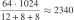

Introduction
Storage (disk) subsystem is poorly understood even by folks who work in bigdata area, where optimizing performance by mere 5% may save a fortune. Very few interviewees are able to answer questions about how data gets from application to storage device and what factors affect performance of this process. Extra complexity comes from the fact that there currently coexist two types of devices: HDD and SSD. Each of them has unique set of benefits and drawbacks. This results in terribly inefficient software designs sometimes. Hardware planning also becomes more like a game of guessing rather than logical reasoning. Over- and under- provisioning may easily happen, latter leading to project failure in worst case.
Goal of this article is to provide overall coverage of storage subsystem with main focus on performance. It is split into theoretical and practical parts. Theoretical part is dedicated to the components of IO stack with particular attention to modern data storage devices: HDD and SSD. Theory of operation provides the basis for explaining performance advantages and limitations of corresponding device; real-world test results are included as well. Practical part lists various methods of performance improvement and also gives hands-on advices about everyday tasks.
Reader is expected to have previous experience of programming and system administration in Linux environment.
Theory
IO stack overview
Let’s look at what happens when application makes IO request, such read(2).
Each time request is issued, it passes through the following layers:
First, request in the form of call to C function goes from userspace process into libc.
Server oriented Linux distributions use GNU libc (glibc), but others may use different
implementation, such as Bionic libc used in Android.
(g)libc role is to provide convenient means of interacting with kernel: it checks arguments
for invalid values, manipulates with registers to satisfy kernel calling conventions (ABI)
and sets errno on return.
Without (g)libc, software engineers would have to write architecture-dependent assembler code
to perform syscalls themselves.
Next, IO syscall, which has the same name as corresponding (g)libc function, enters kernel space and is routed to code of filesystem that is responsible for passed file descriptor. Filesystem maps hierarchical structure of directories and regular files onto linear address space of block device. Depending on syscall, filesystem may trigger a bunch of IO requests to lower levels. For example, reading portion of data from file may trigger read request and also a write request to file’s metadata to update access time.
Next level is page cache. Filesystem contents is extensively cached in RAM, so chances that requested data is found in page cache are high in typical system. If requested data is found here, it is returned immediately without propagating IO request to lower levels. Otherwise, it goes to IO scheduler, also called an elevator.
Scheduler is responsible for order in which requests are sent to storage device. Usually this order is chosen to provide fairness among all processes with respect to IO priorities. When device is ready to serve next request, scheduler pops next request from head of its queue and passes it to driver.
Drivers may be organized into multi-tiered stack for better code reuse. For example, topmost driver may be responsible for encoding IO requests into SCSI commands, while bottomost driver may implement protocol of sending these SCSI commands to specific model of disk controller. Ultimate goal of driver stack is to provide transparent means of communicating with variety of hardware controllers and interfaces.
Workstations and cheap servers have controller integrated into chipset, while more expensive servers have separate dedicated controller chip soldered to motherboard; standalone expander cards inserted into PCIe slots also exist. Controller’s task is to provide reliable delivery of commands to connected hardware and their responses back. It converts commands between software and wire representation, computes checksums, triggers hot-plug events and so on. Some controllers may have their own small cache and IO scheduler, this is particularly true about controllers capable of hardware RAID.
Ultimately, request reaches storage device. Once it completes serving it, response is sent back and also passes through all these layers from bottom to top until data and response code are delivered to userspace application. This finalizes IO operation.
Many more layers may be plugged into these IO stack, for example, by using NFS or multi-tiered RAIDs. Non-essential layers may also be removed: e.g. it is possible to bypass page cache by issuing IO request with so called “direct” flag set on it. Anyway, above stack is the core of IO subsystem of all sorts of computers ranging from smartphones to enterprise servers.
Performance metrics
As with all request-oriented systems, computer storage performance is measured by using two common metrics: throughput and response time.
Throughput comes in two flavours: either as read/write speed in megabytes per second (MB/s) or as number of completed IO operations per second (IOPS). First flavour is better known because it is reported by a variety of command line utilities and GUI programs. It is usually determinant in systems where operations are large enough, such as video streaming. Conversely, IOPS is used primarily in contexts where operations are relatively small and are independent from one another, such as retrieving rows of relational database by their primary keys. Whether it is MB/s or IOPS, throughput is a macro metric in its nature: it doesn’t say anything about each separate operation. Whether you have single large operation or a group of smaller ones, whether IO occupies 100% of application time or only fraction of it, whether identical operations take the same amount of time to complete or whether they are orders of magnitude different — all these cases may produce the same throughput value.
Using throughput as a single metric may be sufficient for offline batch processing systems. High value means good hardware utilization, while low value means waste of resources (hardware). But things become different if you are building online system performing multiple independent requests in parallel. Because you need to satisfy constraints for each separate request, response time — time spent doing single IO operation (ms) — becomes a key factor. Of course, we want it to be as small as possible.
In ideal world, response time is directly derived from throughput and request size: . However, there are a lot of subtleties in practice:
-
response time can never be zero because storage device needs some time to start accessing data
-
operations may influence one another, so order of operations is important
-
if multiple operations are issued simultaneously, they may end up waiting in queue
Result is that response time values are scattered along wide range even if requests are identical in type and size. As such, we need some way to combine them into single number. Most often, average response time over fixed time window is used for that purpose (“single operation completed in 15 ms on average during last minute”). Unfortunately, this naive metric is too general to reveal any significant information. Consider three different systems, each completing the same sequence of 10 operations. Lists of response time values are presented below:
(1) 25 25 25 25 25 25 25 25 25 25 (2) 45 45 45 45 45 5 5 5 5 5 (3) 205 5 5 5 5 5 5 5 5 5
All these systems have the same average response time of 25 time units, so they are completely indistinguishable. But it is obvious that some of them are preferable to the others. Which one is the best? This depends on the application. If these operations are independent (such as in file server) then I’d say that (3) is the best one: system managed to complete almost all operations very fast — in under 5 time units each; one slow operation is not a big problem. On the other hand, if these operations are part of some larger entity and are simultaneously issued (so that total time is limited by the slowest operation), then (1) is the best.
Metric that takes into consideration all such sorts of reasoning is percentile.
Actually, it is not a single metric but rather a family of metrics with given parameter .
-percentile is defined as such response time that of operations are faster
than this value and  percent of operations are slower.
is usually selected to be 90%, 95%, 99% or 100% (last value is simply the slowest
operation in given time window).
Three above systems have 90-percentile response times of 25, 45 and 5 time units respectively.
Idea of percentile metric is that if you are satisfied with 90-percentile response time,
then you are definitely satisfied with all response times less or equal to 90-percentile.
Specific values are of no importance.
percent of operations are slower.
is usually selected to be 90%, 95%, 99% or 100% (last value is simply the slowest
operation in given time window).
Three above systems have 90-percentile response times of 25, 45 and 5 time units respectively.
Idea of percentile metric is that if you are satisfied with 90-percentile response time,
then you are definitely satisfied with all response times less or equal to 90-percentile.
Specific values are of no importance.
Variations are also in use. It may be convenient to keep track of multiple percentiles simultaneously: 95, 99, 100. Or, if there is agreed target response time value , then it makes sense to use “inverse” of percentile — percent of operations that are slower than .
Because all described metrics are connected together, it is not possible to optimize one without sacrifying others. Some projects define their goal as optimization of single metric, while others have a combination of constraints. Examples of such goals:
-
Web server (public service): be able to handle at least 1000 IOPS by keeping 95-percentile response time at 500 ms level. Goal here is to provide virtually instant service to almost all of 1000 users who visit site at peak hour.
-
Video projector (realtime system): be able to read each separate frame in no more than 40 ms. Goal here is to prevent buffer underflow so that video sequence is not interrupted (assuming 25 frames per second).
-
Backup storage (batch system): provide uninterruptible read speed (throughput) of at least 70 MB/s. Required so that typical backup image of 250 GB can be restored in one hour in case of critical data loss.
Access patterns
What most people fail to understand is that throughput figure (MB/s) given in device specification will virtually never be achieved. The reason for that comes out from the fact that response time of each single request is limited by access time — extra price that must be paid for each single request, no matter how small it is. General formula for computing response time of single request is following:
Access time is a combination of all sorts of delays not dependent on request size:
-
Each request must pass through number of software layers before it is sent to device: userspace → kernel → scheduler → driver(s). Response also passes these layers but in reverse direction.
-
Transfer by wire also has some latency, which is particularly large for remote NASes.
-
Finally, device may need to make some preparations after receiving request and before it will be able to stream data. This factor is the major contributor when HDDs are used: HDD must perform mechanical seek, which takes order of milliseconds.
But once random access price is paid, data comes out with fixed rate limited only by throughput of device and connecting interface. Chart below displays relation between request size and effective throughput for three hypothetical devices with the same designed throughput (200 MB/s) but different access times. Even to get 50% of efficiency (100 MB/s), someone needs to make requests of 32 KiB, 256 KiB and 2 MiB respectively. Issuing small requests is very inefficient, this can be easily observed when copying directory containing large number of small files. Consider following analogy: it is unfeasible to enter a store in order to purchase bottle of beer for $1 if entrance fee is $100.

Such sigmoidal behaviour led to idea of differentiaing access patterns into two classes: sequential and random. Most of real world applications generate IO requests belonging to strictly one of these two classes.
- Sequential access
-
Sequential access arises when requests are large enough so that access time plays truly little role; response time is dominated by time it takes to transfer data from storage media to application or vice versa. Throughput (MB/s) is the main metric for such type of pattern. This is optimal mode of operation for storage devices — throughput efficiency is somewhere in the right part of above graph and is close to 100%. All following tasks cause sequential access:
-
making a copy of a large file (in contrast to copying a lot of small files)
-
making backup of a raw block device or a partition
-
loading database index into memory
-
running web server to stream HD-quality movies
-
- Random access
-
Random access is the opposite of sequential access. Requests are so small that second summand of the above formula — access time — plays primary role. IOPS and response time percentile metrics become more important. Random access is less efficient but is inevitable in wide range of applications, such as:
-
making copies of large number of small files (in contrast to making a copy of single large file)
-
issuing SQL SELECTs, each one returning single row by its primary key
-
running web server to provide access to small static files: scripts, stylesheets, thumbnails
-
It should be obvious that some operations are not purely sequential and are not purely random. Middle of the graph is exactly the place where both random and sequential components make significant contribution to response time. Neither of them may be ignored. Such access pattern may be a result of careful request size selection to keep balance between response time and throughput, for example in multiclient server environments.
Performance-related concepts
Concepts presented below are not exclusive for mass storage devices, but are the same for all types of memories found at all levels of application stack, ranging from DRAM chips to high-level pieces of software such as distributed key-value databases as a whole. These concepts are implemented at least twice in respect to storage stack:
-
in OS kernel
-
in intermediate electronics, such as port expanders and hardware RAID controllers (if present)
-
in storage device itself
Caching
Storage devices are very slow compared to other types of memory. Look at the image below, it visualizes memory hierarchy found in modern computers. When moving from top to bottom, memory sizes grow in capacity, but tradeoff is more expensive access time. Largest drop occurs between storage devices and RAM: it is order of 1,000 for SSD and 10,000 for HDD. This should not come as a surprise because storage device is the only one in this hierarchy capable of persistency (ability to store data without power for prolonged amount of time), which doesn’t come for free.
If we collect statistics about accesses to storage, then we may see that only small fraction of data is accessed often, while large bulk of remaining data is virtually never accessed. Actual distribution varies depending on purpose of application, but the general concept of dividing data into “hot” and “cold” proves to be correct for vast majority of applications.

This observation leads to idea of caching storage data — making copy of “hot” data in much faster RAM. Caching reduces access times to nearly zero for “hot” data and it also helps to increase throughput but to a lesser extent. Caching is so natural and effective that it is implemented in all nodes on the path from storage device to user application:
-
storage devices have internal caches
-
hardware RAID controllers and port expanders may have caches
-
operating system maintains disk cache in RAM
-
applications may implement their own domain specific caches
Usually disk cache found in OS is the most important cache because it is the largest one. Hardware cache sizes are fixed during production and rarely exceed 1 GB, while disk cache is limited only by available RAM, which is much easier to expand. Operating system is free to use all RAM not directly requested by applications to transparently maintain cache. It is not uncommon to see disk caches of hundreds of gigabytes. This even led to software architercture pattern when application depends on the fact that all data is cached as part of normal workflow and application would fail to meet performance goals otherwise.
Speculative reads
Idea of speculative reads is to anticipate read requests from upper layer.
When requests are scattered randomly all over the storage address space, no prediction is possible.
But when order of previously accessed addresses is regular, it is easy to make prediction on what
addresses will be accessed next.
Set of recognized patterns varies between different types of memory and implementations.
In data storaging, almost always read-ahead is implemented: it recognizes basic pattern when
addresses are accessed in sequence in ascending order.
For example, if data from addresses 
 was requested,
then read-ahead may decide to speculatively read data from locations … into cache.
Conversely, speculative read of addresses which are accessed in descending order is called read-behind.
was requested,
then read-ahead may decide to speculatively read data from locations … into cache.
Conversely, speculative read of addresses which are accessed in descending order is called read-behind.
Read-ahead and read-behind are typically implemented in all layers of storage stack where there is cache present. As with caching, most notable implementation is found in OS. OS has much more information compared to hardware: it is able to relate requested addresses with files, it knows exactly which process issued request and its priority. As such, mechanism of speculative reads fits naturally into operating system’s IO scheduler. Being a software implementation, it is also very flexible: it allows to modify settings for each separate file programmatically. Software engineer may wish to increase volume of data read in advance for some file or, vice versa, to entirely disable speculative reads. Storage devices also have read-ahead implementation but it is limited to just reading couple of hundreds kilobytes of further located data (regarding last request) if device becomes idle. This may help in embedded systems without sophisticated IO scheduler.
Speculative reads may be executed online or in background. In the first case, initial request size is extended by read-ahead/read-behind value. For example, if you issue request to read 100 KB then it may be transparently extended to 250 KB: first 100 KB is returned to you as was requested, while remaining part is stored in cache. This takes a bit longer to complete but still comes out beneficial for devices with long access time, such as HDDs. Background speculative reads work similar. The only difference is that they are done by additional requests, which are issued in background, when there are no requests of higher priority to serve.
Writeback
Reads from memory are always synchronous: you can’t return control to requesting application
without actual data.
When application asks OS kernel to read some piece of data, application is blocked while
data is physically being fetched from storage or from cache.
But writing is another story.
Think of write as of delayed request.
Operating system does not interact with storage during write() system calls by default.
Instead, it makes a copy of user supplied data into kernel buffer and returns control
to application immediately.
Copying to RAM is very fast compared to access to storage and has to be done anyway
because hardware (DMA) requires that buffer has specific alignment and location in physical memory.
Actual write happens at some point later in background (typically in no more than in couple of seconds
after requested), concurrently with unblocked application.
Hence, the terms writeback and write buffering.
Such approach reduces running time to 50% in best case for applications which would be otherwise
active for one half of time and blocked by write IO for another half.
Without buffered writes, software engineers would have to use multiple threads or nonblocking IO
explicitly to achieve the same result, which is longer to code and harder to debug.
Problem with writeback is that if something goes wrong — for example, power is lost — then buffered but not yet executed writes are also lost. In order to resolve this issue, operating systems provide means of explicit synchronization. These are presented by system calls of different granularity levels which block application execution until all previously issued writes are actually executed.
It is important to remember that writes and reads are very different — they are by no means symmetric.
In particular, if write() of 5 GB of data seems to complete in one second, it doesn’t mean that
your disk has speed of 5 GB/s.
Data is not written yet at this moment, but only buffered in kernel.
Write combining and reordering
Buffering of writes is beneficial to performance not only because of increased concurrency, but it also makes possible for OS to make device-dependent optimizations, which are transparent to user application.
First optimization is write combining. Its idea is that applications tend to use small buffers to write large sequential chunks of data. Instead of issuing each small request to storage device separately, OS groups them into larger requests. This results in that access time cost needs to be paid much rarely on average than it would be paid otherwise.
Another optimization is write reordering.
Whether and how it is used depends on type of storage device.
For example, access time for hard disk drive depends on absolute delta between previously accessed
address and currently accessed address among other things.
If three requests come in sequence to addresses  then it is
beneficial to reorder them to .
This reduces cumulative delta from to
.
then it is
beneficial to reorder them to .
This reduces cumulative delta from to
.
Write reording creates problem of write hazards. Applications may depend on strict ordering of request execution to guarantee logical consistency of data. For example, consider two applications — one producer and one consumer — which communicate by means of filesystem. When producer application wants to send some data, it makes two requests: first it writes new data and then writes pointer to new data into predefined location. If order of requests is reversed by OS, then it is possible that consumer application reads new pointer value first. It makes further read by dereferencing this pointer and sees some garbage because actual data has not been written yet. Applications which depend on strong ordering must explicitly enforce it by using synchronization system calls. Issuing such syscall between two writes would remove write hazard in above example.
Read-modify-write
Memory devices rarely allow to access single bits and even bytes. Such limitation is the result of internal device organization and also simplifies protocols and ECC handling. Minimal unit for mass storage devices is sector, which is 512 or 4096 bytes depending on device model. When OS sends request to device, it specifies index of first sector, number of sectors to read/write and pointer to data buffer. Devices do not have any API to access sectors partially.
Such strong limitation is not convenient for user applications, so OS transparently transforms arbitrary byte-aligned user requests into larger sector-aligned requests. This doesn’t create substantial performance problems for reads: access time cost must be paid anyway, and it is much larger than time required to read extra bytes.
Situation with writes is much worse than that. When application makes write request with address or size not aligned by sector size, OS performs transparently infamous read-modify-write sequence (RMW for short):
-
first, sectors which must be written only partially, are read (#5 and #9 in image below)
-
then data from these sectors which needs to be preserved is masked and merged into main buffer
-
and only then all affected sectors are written to storage device (#5, #6, #7, #8, #9)
It doesn’t seem to create a performance degradation at first glance because only first and last sectors may be written partially, no matter how large request is. Inner sectors are always written in full and, thus, don’t need to be read first. But the problem is that above steps can’t be performed simultaneously — only step by step. This results in that effective write response time becomes poor, it may be twice as long compared to read response time in worst case.
If write request is issued exactly by sector boundaries, then RMW doesn’t happen and there is no performance penalty. Note that high-level hardware (RAID arrays) and software (OS cache and filesystem) may increase minimal RMW-avoidable unit from sector size to even higher value.
Parallelism
Most of elementary memory devices are able to serve only single request at a time and demonstrate poor sequential speed. Combining multiple such devices together results in better performance. This technique is commonly employed in all types of memory:
-
SSDs are equipped with 4-16 flash chips, each chip has 2-8 logical units (LUNs)
-
DRAM modules contain 8-16 DRAM chips per rank
-
DRAM controller has 2 channels
-
RAID arrays are built atop of 2-8 slave devices
Such organization is beneficial to performance of both sequential and random access patterns.
Sequential access is faster due to interleaving. Idea is to organize addressing in such way that parts of single large request are served simultaneously by different elementary memory devices. If these parts turn out to be identical in size, then effective sequential speed is multiplied by number of attached elementary devices. The more devices are connected together, the faster cumulative sequential speed is.
Random access benefits from the fact that large number of small requests may be served in truly parallel way provided they are evenly distributed across elementary devices. Without such organization, requests would have to wait in queue for prolonged periods of time, thus worsen response time from software perspective.
Good thing about parallelism is that its scalability is virtually infinite: by combining more and more elementary memory devices together it is possible to achieve hundreds and thousands times faster sequential speed or to be able to serve hundreds and thousands simultaneous requests in truly parallel way. Bad thing is that access time can’t be lowered by such technique. Even if you managed to get x1000 improvement in throughput, response time of small requests is still the same as if only single elementary device was present. Access time and, as a result, overall response time of standalone request can be improved only by switching to faster technology.
Hard disk drive (HDD)
Hard disk drives first appeared in 1950s. Rapid advancement in technology led to increase in capacity by orders of magnitude, so that modern HDD is able to store up to 10 TB of data with price as low as 2.5 cents per gigabyte. Serious disadvantage of hard disk drives is that their operation relies on mechanical principles. Actually, HDD is the last of devices in computer which is not based on purely electronical or eletrical phenomena (cooling fans are not taken into account because they are not involved in processing of data). As a result, hard disk drives have following disadvantages:
-
HDDs are prone to mechanical failure. Vibrations or elevated temperatures found in highly packed server rooms make HDDs to fail after only couple of years of service.
-
Precise mechanical operation requires using heavy metallic components — it’s impossible to use HDDs in mobile devices. Typical 3.5" HDD weights about 0.7 kg.
-
And, most important, very long access time, which didn’t improve greatly since the advent of HDDs. This is primary reason why HDDs are steadily being obsoleted by SSDs.
However, HDD’s killer feature — very low price per gigabyte — makes them number one choice in applications where price is more important than performance, such as multimedia storages, batch processing systems and backuping.
Theory of operation
Internals
HDD stores information in magnetic form on the surface of platter. It is covered with thin layer of ferromagnetic material and is perfectly polished. While platter surface seems like a single entity from macroscopic point of view, it is divided logically into very small magnetic regions (~30x30 nm). Each such magnetic region has its own direction of magnetization, which is used to encode either “0” or “1”. Direction of magnetization may be changed locally during write operation, which is performed by applying strong external magnetic field exactly to the target region. Each of regions is also may be read by passing coil atop of it: direction of current generated by electormagnetic induction depends on direction of region magnetization. Read and write operations are perfected to such extent, that each of them takes only couple of nanoseconds to act on each separate magnetic region. This translates to speeds of more than 100 MB/sec.
To increase HDD capacity, each platter has two magnetic surfaces, and a group of identical platters is mounted together to form platter assembly. Maximal number of platters in assembly depends on disk form factor and height: 3.5" disks may have 1-7 platters, while 2.5" disks — only 1-3. Thus, 3.5" disk may have maximum of 14 surfaces. Number of platters is rarely specified in datasheets, so you may want to consult The HDD Platter Capacity Database. This resource was created by enthusiast with sole purpose to provide means of getting info about platter configuration without need to disassemble HDD. You may note that some drives have weird setups. For example, it is common for one of platters to have only single functional surface in a two-platter HDD (total of 3 surfaces). Another example is HDD where area of some surfaces is used only partially. Usually such setups are created in order to fulfil marketing demand for full range of capacities: instead of manufacturing completely different drives per each capacity value, it may be cheaper to produce HDD with large single fixed capacity and than to create submodels of it with reduced capacites by locking some surfaces in firmware.
All platters are mounted on a single spindle and are synchronously rotated with fixed speed. Once HDD is powered on, electrical motor spins up platter assembly to nominal speed and this rotation continues until HDD is powered down or goes into power-saving mode. This speed, which is called “rotational speed”, is measured in revolutions per minute (RPM) and makes significant effect on both sequential and random access performance. Typical PC or server 3.5" disk drive has rotational speed of 7200 RPM, which is a de-facto standard. Laptop 2.5" HDDs are usually slower — only 5400 RPM, but some models are as fast as their larger associates — 7200 RPM. Very fast drives also exist — for most demanding applications — which rotate at 10,000 RPM and even 15,000 RPM. Often, such drives are called “raptors”, name given after popular series of such disks — Western Digital Raptor. The problem of fast drives is that they have order of magnitude less capacity and because of their high cost. Currently, they are becoming nearly extinct because of introduction of SSDs, which are cheaper and even faster.
Read and write are performed by magnetic heads, one head per platter surface.
All heads are mounted on the very end of actuator arm.
Actuator arm may be rotated on demand by arbitrary angles.
This operation positions all heads simultaneously onto concentric tracks.
Positioning is relatively fast — it takes only couple of milliseconds to complete, which is achieved with accelerations of
hundreds of g, and is also very precise — modern disk drives have more than 100,000 concentric tracks per inch.
Actuator arm repositioning can be easily heard: it creates audible clicking sound during operation.
Each track is logically is divided by number of sectors where each sector stores 512 or 4096 bytes of useful information depending on model. Each sector is a basic unit of both read and write operations. Such configuration makes it possible to access whole platter surface: actuator arm selects concentric tracks and constant rotation of platter assembly guarantees that each of sectors is periodically passed under head.
For addressing purposes, virtual combination of vertically stacked tracks (one track per surface) is called cylinder. For example, if HDD has 5 platters each with 2 surfaces, than each cylinder consists of 10 vertically stacked tracks, one per surface. When you reposition actuator arm — you reposition it to some cylinder. This makes each of heads to be located above corresponding track of this cylinder.
Besides platter assembly, HDD is equipped with electronical controller. It acts like a glue between host and magnetic storage and is responsible for all sorts of logical operations:
-
it governs actuator arm repositioning
-
computes and verifies error-correcting code (ECC)
-
caches and buffers data
-
maps addresses of “bad” sectors into spare ones
-
reorders requests to achieve better performance (NCQ)
-
implements communication protocol: SATA or SAS
Sector size
Each track is divided into sectors. All sectors carry user data of fixed length, 512 or 4096 bytes. Important to note that sector is a minimal unit of data which may be read or written to. It is not possible to read or write only part of sector, but it is possible to request disk drive to read/write sequence of adjacent sectors. For example, prototype for blocking read function inside driver could be like this:
int hw_read(size_t IndexOfFirstSectorToRead, size_t NumberOfSectorsToRead, void* Buffer);User data is not the only part of sector. As displayed in image below, each sector carries additional bytes which are used internally by HDD. Intersector gap and sync marker areas help HDD to robustly synchronize to the beginning of next sector. ECC area stores error-correcting code for user data. ECC becomes more and more important with growing HDD capacities. Even with ECC, modern HDDs do not guarantee to be error-free. Typical HDD allows 1 error bit per 1015 bits on average (1 error per 125 TB). This figure is of little interest for surveillance video storage but may become a cover-your-ass problem for storing numerical financial data.
One important characterisitc of HDD that influences performance is sector size.
Sector size is always specified as number of user data bytes available per each sector.
Standard value is 512 bytes.
Such HDDs have been used for decades and are still mass produced.
512 byte block is also a default unit for most of unix commands dealing with files and filesystems, such as dd and du.
After introduction of HDDs with other sector sizes, it became necessary to distinguish HDDs by sector size.
Common way is to use term 512n which stands for “512 native”.
Also, “physical” is used interchangeably with “native”.
Thus, terms “512n”, “512 physical”, “512 native” all identify HDD with 512 byte sectors.
Intense rivalry for higher HDD capacity forced manufacturers to increase standard sector size from 512 bytes to larger value. The reason behind this decision is that system data occupies nearly constant size: intesector gap, sync marker and sector address are required only once per sector and do not depend on the amount of data stored in user data section. Overhead of system data becomes lower with increase in sector size, which adds a bit more capacity to HDD. So, new standard value for sector size emerged — 4096 bytes. Such sector size is called “Advanced Format” (AF) and is a relatively new advancement, since 2010. AF is implemented by most of HDDs with multi-terabyte capacites and is advertised as 4Kn (or 4096n).
Third option exists to provide backward compatability to operating systems which do not support AF: 4096 byte physical sector with 512 logical sectors. When using such drives, OS talks to HDD in terms of 512-byte logical sectors. But internally each 8 such logical sectors are grouped together and form single physical 4096 sector. Such drives are advertised as 512e (“512 emulation”). Modern operating systems are aware of the fact that logical and physical sector sizes may be different and always issue requests in units of physical sector sizes (4 KiB for 512e). This doesn’t create any performance penalties. But if some older OS, thinking that drive really has 512 byte sectors, makes write request in violation with 4 KiB alignment rule, then drive accepts this request but performs read-modify-write (transparently) because only part of physical 4 KiB sector is modified. No need to say that this severely cripples performance.
In linux, it is possible to find out information on sector sizes by looking into sysfs.
Replace sda with the name of device you want to know about.
This should be raw block device name and not a partition.
$ cat /sys/class/block/sda/queue/logical_block_size 512 $ cat /sys/class/block/sda/queue/physical_block_size 4096
It may be worth to note that some enterprise class drives have a bit larger sector size than canonical values: 512+8, 512+16, 4096+16, 4096+64 or 4096+128 bytes. Such extensions are part of SCSI protocol and are called DIF/DIX (Data Integrity Field/Data Integrity Extensions) or PI (Protection Information). Extra bytes are used to store checksums computed by software or by RAID controller rather by disk drive itself. Such approach allows to make verification of data integrity more robust. It verifies storage subsystem as a whole, including not only HDDs but also all intermediate electronics and buses.
Addressing
Next thing we need to know is sector addressing. Addressing scheme is very important for performance as it allows OS to optimize its requests, and that’s why addressing scheme is kept similar among all HDDs.
Very old HDDs were addressed by using vector of three numbers — (cylinder, head, sector) — called CHS for short. Single HDD had fixed number of cylinders, fixed number of heads, and fixed number of sectors per track. All these values were reported to BIOS during system initalization. If you wanted to access some sector, then you would send its three coordinates to disk drive. Cylinder value specified position where to move actuator arm to, head value activated corresponding head, and, after that, HDD waited until track with given track number passed under activated head while platter assembly was being constantly rotated.
Access to adjacent sectors belonging to single track is cheap, while access to sectors belonging to tracks of different cylinders is expensive. Filesystem make use of this fact to optimize allocation algorithms. In particular, they try to make files to occupy nearby sectors rather than far away sectors.
CHS scheme became obsolete, partly because using fixed number of sectors per track is not optimal in terms of HDD capacity. Outer sectors are longer compared to inner sectors (left image), but store the same amount of information. This inspired manufacturers to create technology which is called ZBR — zone bit recording. Idea of ZBR is to group cylinders by sector density. Number of sectors per track is fixed inside single group, but grows gradually when moving from inner group to outer group.
Downside of such approach is that addressing scheme becomes very complex. OS needs to know number of cylinder groups and number of sectors per track for each such group. Instead of exposing these internals to OS, manufacturers adopted simpler addressing scheme called LBA (logical block addressing). When OS works with LBA enabled disk drives, it needs to specify only flat sector address in range ], where is total number of sectors. HDD controller translates this flat address into geometrical coordinates: cylinder, cylinder group, track, sector, — and this translation algorithm is transparent to OS.
Though exact algorithm to map LBA to geometrical coordinates is not known to OS, mapping is somewhat predictable. This is done intentionally to allow filesystems to continue to employ their optimizations. In particular:
-
Access to nearby LBA addresses is cheaper than access to far away addresses. For example, it is better to access sectors
rather than
-
LBA addresses always start with outermost cylinder and end with innermost one. Zero LBA address is mapped to some sector in the outermost cylinder, while LBA address is mapped to some sector in the innermost cylinder.
| Linear→ | 000 | 001 | 002 | … | 049 | 050 | 051 | 052 | … | 099 | 100 | 101 | 102 | … | 149 | … | 950 | 951 | 952 | … | 999 | |||||
|---|---|---|---|---|---|---|---|---|---|---|---|---|---|---|---|---|---|---|---|---|---|---|---|---|---|---|
Cylinder |
0 |
0 |
0 |
… |
0 |
0 |
0 |
0 |
… |
0 |
1 |
1 |
1 |
… |
1 |
… |
9 |
9 |
9 |
… |
9 |
|||||
Head |
0 |
0 |
0 |
… |
0 |
1 |
1 |
1 |
… |
1 |
0 |
0 |
0 |
… |
0 |
… |
1 |
1 |
1 |
… |
1 |
|||||
Sector |
0 |
1 |
2 |
… |
49 |
0 |
1 |
2 |
… |
49 |
0 |
0 |
1 |
… |
49 |
… |
0 |
1 |
2 |
… |
49 |
Transition to ZBR created serious impact on HDD performance. Because disk drive spins at fixed rate, head reads more sectors per second when positioned at outward cylinder compared to when it is positioned at inward cylinder in the same amount of time. Combined with rule #2 from above, this leads to important characteriscitc of HDDs: working with low LBA addresses is faster than working with high addresses.
All modern HDDs use LBA atop of ZBR.
It is possible occasionly to see CHS values, for example in BIOS or in hdparm output.
But keep in mind that these values are not true values: this is emulation provided only for backward compatability.
It has nothing to do with actual internal geometry and provides access to only limited subset of HDD sectors.
Performance
Once completed with basics of HDD operation, we can move on to measuring performance. Each IO operation is a read or a write of a sequence of sectors specified by LBA address of first sector. Mechanical nature of HDD makes IO operation to be a multistep process:
-
Random access. Obvious enough that in order to start accessing sectors, head must be positioned to the first requested sector. When request is received, actuator arm position relative to center of platter assembly is in some random state in general case. The same is true about instantaneous angular position of platter assembly. So, HDD performs random access, which in turn consists of two steps:
-
Seek. Controller sends command to move actuator arm to a position so that head is above track where first requested sector is located. Actuator arm is moved inwards or outwards depending on its current position.
-
Rotational delay. Because platters are being constantly rotated, target sector will eventually pass under head. No special action is required — only idle waiting. This time may be as long as it takes to make one full revolution, but is only half revolution on average.
-
-
Now HDD reads or writes all requested sectors one by one, while platter assembly continues to be rotated. Situation is possible when some of requested sectors are located in adjacent cylinder. HDD has to reposition actuator arm once again (track-to-track seek) in this case.
Each of these steps takes considerable amount of total time and cannot be ignored in general. Let’s see at how these steps affect performance of different access patterns.
Sequential access
Sequential access pattern is natural to HDD. It arises when we want to read or write very large number of adjacent sectors starting with given address: . here is order of hundreds and thousands.
Becase number of sectors to access is huge, positioning to the first sector () takes small time compared to read/write itself. So, we assume that head is already positioned to it. Taking into consideration LBA to CHS mapping, now the only thing we need to do is to wait some time while platter assembly is being rotated: all required sectors will be read/written during this rotation. Faster rotation speed and higher density of sectors per track make sequential access faster.
The only bad thing that may happen is when subsequent sector has different cylinder coordinate (e.g. CHS transition (0,1,49)→(1,0,0)). Actuator arm has to be repositioned in this case. Repositioning is performed to adjacent cylinder (to the inside of the platter), and time required to perform such move is called track-to-track seek time. Typical value of track-to-track seek time is only couple of milliseconds and is often specified in HDD’s datasheet. Anyway, track-to-track seeks do not contribute very much to sequential access performance and may be ignored.
Good thing about sequential access is that almost all time goes direcly into reading or writing sectors. Thus, throughput efficiency is at its maximum. This is the optimum mode of operation for HDD by design. Manufacturers usually provide sequential access speed as sustained data transfer rate in datasheets. Typical value for modern 3.5'' 7200 RPM disk drive is 150..200 MB/sec. But you must be aware of two common marketing tricks leading to this figure. First one is well-known: rate is specified in decimal megabytes per second rather than in binary ones. Difference between them is about 5%: not so great, but and also is not too small to ignore if you’re building high load file storage. Second trick is subtle one. This transfer rate is the maximal rate and was measured by manufacturer at lowest address: remember that largest number of sectors is in the outermost cylinder because of ZBR. Average rate is much smaller, you will need to subtract 20%-25% of advertised rate to get it. Minimal transfer rate, which is achieved in innermost cylinder, is even worth that that — down 40%.
In general, sequential speed depends on following disk characteristics:
-
Rotational speed. Disk drive with 7200 RPM is faster than 5400 RPM one.
-
Sector count per single track. This in turn depends on:
-
HDD model introduction date. Newer generations of HDD have higher density of sectors, both longitudal (more sectors per track) and radial (more tracks per platter surface). Recently introduced HDD model will be faster than model introduced five years ago.
-
LBA address. Working with low addresses is faster than working with high addresses.
-
-
Track-to-track seek time. HDD with smaller value is a bit faster.
Random access
While hard disk drives are good at sequential access, they really suck at random access at the same time. Random access arises in situations when we need to make a lot of small (couple of sectors) reads or writes scattered all over the address space.
Time it takes to read/write sectors is neglible because number of sectors involved is small by the definition of random access. The true problem is that to read/write this small number of sectors, head must be properly positioned to them. This repositioning (called access time) takes all the time, and that’s why throughput (MB/s) drops down greatly compared to sequential access.
Let’s look at what happens during random access. HDD carries out two operations in sequence:
-
First, it moves actuator arm to target track. Time required to perform such move is called seek time.
-
Next, it waits until platter is being rotated so that target sector is just beneath the head. Corresponding metric is called rotational latency.
Seek time depends on number of tracks between current track and destination track. The closer they are together — the faster is the seek. For example, worst case is moving from the innermost track to the outermost track or vice versa. Conversely, seek to adjacent track is relatively cheap. In practice, seek time is not necesseraly linearly dependent on track count between source and destination because HDDs move actuator arm with some acceleration. In order to compare disk drives, three different characteristics are in use:
-
Track-to-track seek time (~0.2..2 ms). This is time it takes to move from one track to its neighbour and presents the lowest bound for all possible seek times. This characteristic is not important for random access but plays some role in sequential access as was explained in previous section.
-
Full stroke seek time (~15..25 ms). Time it takes to move from outermost track to innermost one or vice versa. This is the worst possible seek time.
-
Average seek time (~4..6 ms). This time is computed as average time it takes to move actuator arm across 1/3 of all tracks. This number (1/3) is derived from the fact that if we have two uniformly distributed indpenedent random variables (source and destination tracks respectively), then average difference between them is 1/3 of their range.
Rotational latency is less predictable but is strictly bounded. After seek is done, platter angular position is random relatively to target sector, and HDD needs to wait while platter is being rotated. Best case is if target sector turned out to be just exactly under head after seek. Worst case is if target sector has just passed away from head, and wait for full revolution is required until it will pass again under the head. It can be said that wait for half rotation is done on average. Thus, rotational latency depends solely on disk rotational speed (RPM). Table below lists well known rotational speeds along with translations of RPM values into how long it takes to make single revolution and how many such revolutions are performed per second.
| RPM | Half revolution | Full revolution | ||
|---|---|---|---|---|
|
ms |
IOPS |
ms |
IOPS |
15,000 |
2.0 |
500 |
4.0 |
250 |
10,000 |
3.0 |
333 |
6.0 |
166 |
7,200 |
4.2 |
240 |
8.3 |
120 |
5,900 |
5.1 |
196 |
10.2 |
98 |
5,400 |
5.6 |
180 |
11.1 |
90 |
4,200 |
7.1 |
140 |
14.3 |
70 |
For example, half revolution takes 4.2 ms for 7200 RPM disk drive. If you are querying database for random records, you can’t get performance of more than 240 requests per second on average. This value is limited by rotational speed even if records are packed close together (seek is cheap in this case). If you’ve got better performance then this means that records come out mostly from page cache rather than from HDD, and you will get into trouble when dataset becomes large enough so that it doesn’t fit in page cache anymore.
Seek time and rotational latency are rivals in the field of who contributes more to the access time. Graph below demonstrates dependence between LBA address delta and range of possible access times. HDD is assumed to be 7200 RPM and to execute full stroke seek in 15 ms. Light green line represents lowest possible access time, which is the result of seek time only. Mid-green and dark green lines are cases when additional wait was required for half and full revolutions respectively. For example, if we send requests to 1 TB drive, previous request was at 100 GB position and new request is at 500 GB, then delta between them is 40%. Thus, according to the graph below, access time is bounded between 10..18 ms. Repetition of this test will produce different values from 10 to 18 ms, but average access time will be 14 ms.

It can be observed that if address delta is relatively small, then rotational latency is definitely the major contributor: sometimes it is zero, but sometimes it is full rotation, while seek time is always negligible. Conversely, if address delta is large, then seek time takes all the credit. Finally, if address delta is not too big not too small, then there is no definite winner.
To realize slowness of random access, let’s compare it to CPU speed. If we are given a 3 GHz CPU, then we may assume that it performs basic operations (like additions) per second in sequence, and this is the worst case — without taking into account out-of-order execution and other hardware optimizations. While disk drive serves single random access read of 5 ms, CPU manages to complete operations. HDD random access is more than seven orders of magnitude slower than CPU arithmetic unit.
Hybrid access
Some applications have a concept of data chunk. They read/write data in chunks of fixed size, which can be configured. Choice of chunk size depends on what is more important: throughput or response time. You can’t get both of them. If throughput is more important than response time, then chunk size is chosen to be very large, so that access pattern becomes sequential. This is natural and most effective mode for HDDs. If response time is more important than throughput, then chunk size is chosen to be very small — not more than couple of dozens of sectors. Access pattern becomes almost random in this case. As explained above, HDDs are very poor at performing random access: its speed (MB/s) may fall down orders of magnitude compared to throughput-oriented chunk size.
Now imagine web application that streams video files to multiple clients simultaneously. Of course, we would like to make chunk size as large as possible (tens and hundreds of megabytes). Unfortunetely, such large chunk size has its own drawbacks. First of all, we need in-memory buffer of corresponding size for each separate client, which may be expensive. Second, and more important, is that clients may be blocked for long periods of time: if, while reading data for client A, new client B makes request, then B is stalled until read for A is complete. Conversely, using very small chunk size leads to perfect fairness and small memory footprint but uses HDDs extremely ineffectively (pure random access).
So, what we need to do, is to find a balance between response time and effective throughput. For example, we may want to choose such chunk size that values of both summands in general formula are equal:
If HDD has average sustained speed of 100 MB/s and average access time is 5 ms, then chunk size is chosen to be . Single operation will take 10 ms on average with such chunk size, half of which is spent on random access and another half is spent on read/write itself. Throughput is also not so bad: .
Comparison
In the image below, throughput efficiency of three different access patterns is compared. Time flows left to right; each separate long bar reprerensts single request. Blue color represents “useful” periods of time, when data is actually read or written. Red color means periods of time wasted on seeks and rotational delays.
Sequential access demonstrates nearly perfect throughput, above 90%. Almost all time is spent in reading or writing sectors excluding initial random access and rare track-to-track seeks. Random access is the opposite: all time is burnt in disk random accesses, and only very small fraction of time is spent in working directly with data. Throughput efficiency is just above zero. Hybrid access displays 50% throughput efficiency by design: a balance between throughput and IOPS.
As a rule of thumb, use HDD for mostly sequential access and do not use it for random access. The only one exception is when response time of tens of milliseconds is acceptable and you are sure that system would never be required to provide more than one hundred IOPS.
Experiments
Effect of LBA address on sequential access performance
This test demonstrates effect of LBA address on sequential performance. Test was performed by reading 128 MiB chunks of data at different addresses: first probe was made at address 0, next — at 1% of disk capacity, and so on with last probe made at 100% of capacity. Horizontal axis is the address value in gigabytes, vertical axis is the achieved speed.

You can clearly see that speed drops down more than twice at highest address (which is mapped to innermost HDD track). Sometimes it may be even worth to repartition HDD with regard to above effect:
-
If you are going to work with data which will be often accessed sequentially, then create dedicated partition for it in the very beginning of HDD. Examples of such data include: web server access logs, database files and streaming video.
-
If you have data which will be accessed rarely (access pattern doesn’t matter), then create dedicated partition for it in the very end of HDD so that this data won’t use valuable low addresses.
Random access response time distribution
Next graph is dedicated to random access timings. Each point corresponds to one of 2000 random reads performed, each read is one sector long (512 bytes) and is properly aligned. Horizontal axis is LBA address delta between source and destination positions, vertical axis is operation response time.

Points lying at the lower bound of the cloud are the best cases. They correspond to situations when after actuator arm has been positioned at proper track, required sector turned out to be just beneath the head. That is, no additional wait for platter rotation is required. Note that seek time becomes longer with larger LBA address delta. Seek time corresponding to max delta is fullstroke seek time (21 ms).
Conversely, upper bound points correspond to the worst possible situation. After arm has been positioned to target track, required sector has just moved past head, and drive has to wait for one full platter rotation until required sector passes under head once again. According to above graph, rotational delay is spread in range [0, 11] milliseconds and is independent of deltas. Knowledge of full rotation time (11 ms) immediately leads us to the conclusion that this is 5400 RPM HDD that was tested.
Important to remember that short delta random accesses are limited in performance by rotational speed while large delta random acceses are limited by seek time.
Chunk size
This tests demonstrates influence of chunk size on two types of throughput: MB/s and IOPS.

If HDD was an ideal device, then access time would be zero and throughput (MB/s) would be constant (dashed line) disregarding chunk size. Unfortunately, access time is well above zero due to mechanical nature of HDD, which results in throughput being much worse on average. Effective throughput converges to optimum only when chunk size is very large, starting with 8 MiB for specimen used in this test. HDD is working in purely sequential access mode and achieves it top performance (MB/s) in this region. Almost all time spent inside HDD goes directly into reading or writing sectors.
Left part of graph displays the opposite. Chunk size is very small, and HDD is working in purely random access mode. As such, HDD manages to complete a lot of independent operations per second, but cumulative write speed (MB/s) falls down dramatically compared to purely sequential access. For example, we get nearly top IOPS with 16 KiB chunks but write speed is only ~2 MB/s, which is 1/15 of top possible speed. Time spent on writing sectors is negligible in this case — most of time is actually “burnt” on seeks and rotational delays. It is easy to encounter such situation in real world during copying a directory with a lot of small files in it. When this is happenning, you may observe your HDD working like mad judging by blinking LEDs, you may hear hellish sounds from inside (seeks), but copy speed is just above zero MB/s.
Point of intersection corresonds to kind of golden mean, where both MB/s and IOPS are neither too bad nor too good.
Solid-state drive (SSD)
SSDs are slowly but steady taking the place of HDDs as a mainstream storage device. Free of mechanical parts, SSD clears the gap between sequential and random types of access: both are served equally fast. Unfortunately, cost per gigabyte is still about eight times higher for SSD compared to HDD even after more than decade of intensive development. This makes SSDs and HDDs to organically coexist in data storage device market, with each one being ideally suitable for specific set of applications.
Theory of operation
Floating gate transistor
Solid state drives, USB sticks and all common types of memory cards are all based on flash memory. Basic unit of flash memory is a floating gate IGFET transistor. Idea behind it is to add additional layer, which is called “floating gate” (FG), to otherwise ordinal IGFET transistor. Floating gate is surrounded by insulating layers from both sides. Such structure allows to trap excessive electrons inside FG. Under normal circumstances, neither they can escape FG nor other electrons can penetrate insulator layer and get into FG. Hence the ability of transistor to store information: it is said that transistor stores binary “0” or “1” depending on whether its FG is charged with additional electrons or not.
Reading transistor state is performed by checking whether source-to-drain path conducts electricity or not. If gate is unconnected to power source, then this path is definitely unconductive, disregarding whether FG is charged or not: one of p-n junctions is in reverse and won’t allow current to flow through it.
Things become interesting when gate is connected to power source (). If FG is uncharged, then control gate’s electrical field attracts some of electrons to the very top of p-substrate like a magnet. These electrons can’t move up because they do not have enough energy to pass insulator layer, so they form narrow region which is conductive and exists until power is removed from gate. Current is free to flow along this region in both directions by means of these electrons, thus shortening source-to-drain path. But if FG is charged, then FG charge partially shields p-substrate from gate`s electrical field. Remaining electrical field is not enough to attract substantial number of electrons, and source-to-drain path remains unconductive.
It is noteworthy to mention that if gate voltage is raised to even higher level (), then FG won’t be able to provide enough shielding anymore, and source-to-drain path will become conductive unconditionally. Such operation is of no use for standalone transistor, but is essential when transistors are arranged into series, as would be explained later.
To change the charge of FG, someone needs to apply high voltage (tens of volts) between gate and other terminals. It forces electrons to pass lower insulator layer. Depending on direction of voltage applied, either electrons will move out of FG to the p-substrate, or vice versa, move from p-substrate into the FG. Top insulator layer is made of material which is inpenetrable even at high voltages. Adding electrons to FG is called “programming” in terms of flash memory and removing electrons from FG is called “erasing”. Unfortunately, each program or erase operation worsens quality of insulator layer. Some of electrons get trapped in insulator layer rather than in FG, and there are no simple controlled means of removing them out of there. Electrons trapped in insulator layer create residual charge and also facilitate leakage of electrons to/from FG. After number of program/erase cycles, insulator layer “wears off” and transistor is unsuitable for data storage anymore. Manufacturers specify endurance of flash memory as guaranteed number of program/erase cycles before failure (P/E cycles).
Modern flash memory is able to store more than single bit per transistor (which are called cells in terms of flash memory). This is achieved by distinguising between more than two levels of charge, for example, by testing source-to-drain conductivity with different gate voltages. Currently, following types are produced:
-
SLC, “single-level cell” — senses 2 levels of charge, stores 1 bit
-
MLC, “multi-level cell” — senses 4 levels of charge, stores 2 bits. Technically, “multi-” may mean any number of levels larger than two, but in practice it almost always refers to four levels.
-
TLC, “triple-level cell” — senses 8 levels of charge, stores 3 bits
Storing more bits per cell has obvious benefit of having higher device capacity. Tradeoff is that when more bits per cell are stored, things become complicated. It is easy to implement read/program operations with only two levels of charge: every charge that is higher than predefined threshold value is treated as binary 1 and every charge below this threshold value is binary 0. Ability to work with three levels or more requires intermediate charges to fit exactly into specified windows.
This makes all operations slower. For example, now programming has to be done in small steps in order not to miss desired window:
-
Add some small charge to FG
-
Verify its actual level
-
Go to first step if it has not achieved required level yet
Storing more levels per transistor also severely reduces number of P/E cycles: even slowest leakage of electrons through insulator layer would move charge out of its window and be sensed as incorrect value. Typical SLC endures up to 100,000 P/E cycles, MLC — 3,000, and TLC is even worse than that — only 1,000. To alleviate this problem, flash memory contains extra cells to store ECC, but this helps only to some extent.
Block
Cells are organized into two-dimensional arrays called blocks. All cells share p-substrate, that’s why only three leads per cell are shown. Each row of cells forms single page, which has somewhat similar role as sector in HDD: it is a basic unit of reading and programming in most cases. Typical page consists of 4K-32K cells plus some cells to store per-page ECC (not shown). Typical block has 64-128 such pages.
Block supports the same three operations as standalone cell: read, program and erase. But now, because cells are coupled into series, it becomes even trickier to perform them.
- Read
-
Both read and program operations act on single pages. Selection of particular page is done by connecting word lines of all other pages to . This opens all cells in them no matter whether their floating gates are charged or not. As such, circuitry turns into as if only single page was present.
Next step depends on operation. If read is done, then selected page’s word line is connected to () and source line is grounded. Now data for reading is sensed via bit lines: path between source line and each of bit lines is conductive if and only if corresponding cell in selected page doesn’t hold charge. If cell is MLC/TLC, than either different levels of current are sensed, or reading is performed in number of steps with different values. It takes about 25 s to read single page in SLC, and couple of times longer in MLC/TLC.
If we put aside floating gates for a moment, then it can be observed that such configuration resembles multi-input NAND gate: . Word lines act as inputs and each separate bit line is an output. Bit line is tied to ground ("0") if and only if all gates are "1". Similarity to NAND gate gave name to such type of memory organization — NAND flash. Another type of flash memory, which won’t be described here, is NOR flash: it is faster for reading and provides random access to each separate cell. But because its higher cost, it is mainly used to store and execute firmware code.
- Program
-
Programming is also performed by first selecting page by applying to all other pages. Next, bit lines corresponding to bits in page we want to program are grounded, and word line of selected page is pulled to (). voltage is high enough to force electrons to overcome insulator layer and move into floating gates. Floating gates in other cells are nearly unaffected because voltage difference is only , which is too low. Program operation is much slower than read operation: about 200 s for SLC and, as with read, couple of times longer for MLC/TLC. But anyway, it is order of magnitude faster than HDD’s access time.
It is reasonable to ask: why unit of programming is whole page and not single cell? Problem is that because program operation uses high voltage, charges of nearby cells are disturbed. If multiple program operations were allowed to be issued to single page (to different cells), than this would potentially toggle a glitch in cells we didn’t want to be programmed. Some SLC flash allows partial programming, that is, it is possible to first program cells 0, 5 and then 2, 3, 6 in a single page. But even such, number of partial programmings beore erasure is strictly limited. The only reasonable case for using partial programming is to split large physical page into number of smaller logical pages, thus allowing single program operation to be issued once per logical page.
- Erase
-
The key difference of erase is that it is a whole block operation: all cells of one or more blocks are erased simultaneously. Such limitation simplifies memory production and also removes the necessity to care about disturbing charge of nearby cells. Inability to erase single pages presents second major drawback of flash memory (wearing is being the first one). Erase is performed very rough: all word lines are grounded and high voltage source is connected to body (substrate), which is shared by all cells. This forces electrons to move out from FG into p-substrate, thus zeroing charge of all floating gates.
Erase is even slower than programming: 1500 s for SLC and, once again, couple of times longer for MLC/TLC. But in practice it is not a big problem because, under normal circumstances, erases are performed in background. If, for some reason, erase of only subset of pages needs to be done, then we have to perform read-modify-write sequence:
-
first, all pages, which must be preserved, are read into temporary buffer one by one
-
then block is erased as a whole
-
then buffered pages are programmed back one by one
Not only this is extremely slow, but also wears cells prematurely. In order to avoid such situations, SSD employ smart algorithms described in next section.
-
As a summary, here is lifecycle of flash block consisting of four pages each with 8 SLC cells. Note that once page is programmed, it remains in such state until erase is performed, which acts on whole block. There is no overwrite operation.
And here are typical performance figures of NAND flash. Most of produced server grade flash memory is of MLC type. SSDs intended to be used in workstations may be MLC or TLC.
| Read page | Program page | Erase block | P/E cycles | |
|---|---|---|---|---|
SLC |
25 s |
200 s |
1500 s |
100,000 |
MLC |
50 s |
600 s |
3000 s |
3,000 - 10,000 |
TLC |
75 s |
900 s |
4500 s |
1,000 - 5,000 |
Controller
Like HDDs, SSDs carry controller, which acts as a bridge between memory chips and outer interface. But flash memory specifics — erasures at block level and wearing — make controller to implement complex algorithms to overcome these limitations. As a result, performance and life span of SSD depend on controller to such great extent that controller model is typically specified in SSD datasheet.
Let’s start with the following situation. Suppose that your have some sector that is updated very often. For example, it backs database row that stores current ZWR/USD exchange rate. If sectors had one-to-one mapping to pages of flash memory as in HDD, that would require read-modify-write sequence at block level with each edit. That would wear out frequently written pages very soon (only after couple of thousands of writes), while long tale of rarely used pages would remain in nearly virgin state. Such approach is also undesirable because performance of read-modify-write is very poor — about that of HDD’s access time.
To solve these problems, logical sectors do not have fixed mapping to flash memory pages.
Instead, there is additional level of addressing called flash translation layer (FTL),
maintained by controller.
Controller stores table which maps logical sectors to (chip, block, page) tuples,
and this table is updated during SSD lifetime.
When write() request is served, instead of performing read-modify-write sequence,
controller searches for free page, writes data into it and updates table entry for written sector.
If you make 1000 writes to the same sector, then 1000 different pages will be occupied by data,
with table entry pointing to the page with latest version.
Example of FTL mapping is displayed below. There are 16 logical sectors: some of them are valid and are mapped to physical pages, while others are not currently valid. Pages not referenced by FTL are either free pages or contain old versions of sectors.
Existance of FTL creates in turn another problem — dealing with pages which store deprecated versions. To reclaim them, controller performs garbage collecting (GC). Normally, it is run in background, when there are no pending requests from OS to serve. If some block is full and all its pages contain deprecated versions, block may be safely erased and all its pages may be added to the pool of free pages for further use. It also makes sense to erase block if it contains small fraction of live pages — by copying them into free pages and updating FTL table accordingly.
Obviously enough, FTL is effective only if there are plenty of free pages. Without having free pages, attempt to write to some sector will cause blocking read-modify-write sequence, which is extremely bad from performance and longevity points of view. But the problem is that SSD is always full by default. All those “free space left” metrics are part of filesystems and are of no knowledge to SSD. From SSD persepective, once data is written to some sector, this sector is “live” forever, even if it doesn’t hold valid data anymore from filesystem’s point of view. Two special features are implemented in modern SSDs to resolve this problem.
First feature is called provisioning area. SSDs come with a bit more capacity than actually is specified in datasheets (typically +5..10%). Provisioning area size is not counted into total capacity of SSD. Main purpose of adding provisioning area is to be sure that SSD will never be 100% full internally, thus nearly eliminating read-modify-write. The only one exception is when rate of writes is so high that background GC is not able to keep pace with it. Second purpose of provisioning area is to ensure that spare blocks exist as a replacement to be used for weared off blocks.
Second feature in use is a TRIM command (word is not acronym but an ATA command name), also known as erase and discard. If filesystem supports it, then it may send TRIM along with range of sectors to notify SSD that data in these sectors is not required anymore. On receiving such request, controller will remove entries from FTL table and mark pages corresponding to specified sectors as ready for garbage collecting. After that is done, reading trimmed sectors without writing to them first will return unpredictable data (for security reasons, controller will usually return zeroes without accessing any pages at all).
Image below demonstrates tecnhniques described above:
-
Initally, all pages of block
#0are in erased state. No data is stored in sectors0x111111,0x222222,0x333333— there are null pointers in FTL table for them. -
Next, some data was written into sectors
0x111111and0x222222. Controller found that pages in block#0are free and used them to store this data. After write was completed, it also updated FTL table to point to these pages. -
Next, sector
0x333333was written to and also sectors0x111111and0x222222were overwritten. Controller wrote new versions of sectors in free pages and updated table. Pages containing old versions were marked as ready for GC. -
Next, filesystem decided that sector
0x222222is not required anymore and sent TRIM command. Controller removed entry for this sector and marked page as ready for GC. -
Finally, background GC was performed. Valid versions were moved to empty block
#1, table was updated appropriately and block#0was erased.
Besides garbage collecting, controller is also responsible for wear leveling. Its ultimate goal is to distribute erases among all blocks as evenly as possible. Controller stores set of metrics for each block: number of times each block was erased and last erase timestamp. Not only are these metrics used to select where to direct next write request to, but controller also performs background wear leveling. Idea behind it is that if some block is close to its P/E limit, then writes to this block should be avoided, but there is no problem to use it for reading. So, controller searches for pages with “stable” data in them: pages which were last written long time ago and have not been modified since that time (e.g. pages which back OS installation or multimedia collection). Next, pages of highly weared block and “stable” pages are exchanged. This requires erase on nearly dead block one more time, but is beneficial in the long run. It reduces chances that highly weared block will be overwritten soon, hence prolonging its life.
SSD assembly
Thousands of flash blocks are produced together on a single die in the form of flash chip, and multiple such chips are the base of SSD. Other important components are the controller chip and RAM chip.
One important question to answer is where FTL is stored. FTL and related data structures (list of free pages, wear counters) must be preserved when SSD is offline, so they have to occupy some region of flash memory. But it would be unfeasable to access this region directly during SSD operation because each program or erase request would require additional write to this region to update FTL, which is bad for performance and causes premature wearing. That’s why most of SSDs cache FTL in RAM. When SSD is powered on, FTL and related data structures are loaded from flash memory into RAM, where they are read from and updated to during SSD operation. Periodically cached state is synchronized to persistent flash memory; this also happens when host sends flush or shutdown command. As with write buffering, this approach solves performance problem but creates problem of inconsistency: if SSD is powered down without proper shutdown command, cached FTL state won’t be persisted. To resolve this issue, enterprise grade SSDs may carry a couple of capacitors with enough energy to flush FTL (and data) from RAM buffer into flash memory in case of sudden power loss. SSDs produced for mass market usually lack this feature.
Performance
What makes SSDs different from HDDs is extremely high concurrency. It benefits to both sequential access performance and, more important, to random access performance.
As we remember, HDD is able to serve only single request at a time simply because it has only one actuator arm. But SSDs have multiple chips, and each chip is also split internally into number of logical units (LUNs). Each LUN is an independent entity and may serve one request at a time. The more chips and LUNs SSD has, the more concurrent random access requests it may serve as a whole.
The same reasoning applies for sequential access, too. If only single chip was used for sequential access, than performance would be rather poor. For example, if sector size is 4096 bytes and flash memory is of MLC type (50 s read time and 500 s write time), then resulting speed is limited by 81.92 MB/s and 8.192 MB/s respectively. But because controller interleaves sequential sectors among multiple chips/LUNs, speed is multiplied by concurrency factor.
By varying number of chips/LUNs it is possible to produce SSDs with performance characteristics in wide range of values: from only 100 MB/s / 1000 IOPS for workstation grade SSDs to gigabytes per second / 1 million IOPS for high-end enterprise SSDs.
Following sections provide examples.
Experiments
First thing you want to know is that testing SSDs is much harder than HDDs. Additional layer of indirection — FTL — and all the algorithms used to maintain it create significant differences between SSDs. Following rules must be followed in order to get robust test results:
-
SSDs shipped from factory have all blocks erased. Trying to test such drive may result in unusually high or low performance. To make test results valid, you need to explicitly fill SSD with data before running tests. Either fill it all, or, ideally, make sure that proportion between occupied and erased blocks equals to that of production environment. And do not use
/dev/zeroas data input source because some home grade SSDs compress data on the fly. -
SSDs run some operations in background (erasures and static wear leveling), and both of them influence test results. Repeat tests multiple times and be ready that identical test runs will demonstrate considerable differences in performance.
-
Thinly provisioned SSDs may demonstrate good performance when test only starts but with dramatical degradation further, when there are no free blocks left. Run tests for prolonged amount of time.
In general, bear in mind that synthetic benchmarks is poor choice for testing SSDs (in contrast to HDDs). Tests below try to demonstrate orders of magnitude and general performance patterns universal to all SSDs.
Single threaded random access
First test demonstrates how good SSDs are at random access. Test was performed by making 1 million single sector requests scattered uniformly along address space. Horizontal axis is test completion in percents, vertical — number of IOPS achieved.

Let’s start analysis with looking at random reads line. As expected, it is very stable along the course of test, nearly a straight line. Converting 7000 IOPS to its inverse results in 143 s average response time, which is couple of times larger compared to anticipated flash memory read time (25-75 s), but is satisfactory if transfer and in-kernel delays are taken into account. 7000 IOPS is already 35x (!) improvement against HDD random access, which is a good indicator by itself to switch to SSDs in applications where random access is the primary method of accessing storage.
Bottom line represents synchronous writes. Term “synchronous” means that each IO syscall returns control to program ony after data has been actually written to physical media. Such mode disallows write buffering in all nodes on the path from application to storage media. Neither OS nor drive are allowed to respond back before write actually takes place. As such, this mode is perfect for performing unbiased comparison of reads and writes as they happen in "raw" flash memory, without any higher level optimizations. It is clearly seen from chart above that synchronous writes have two drawbacks. First one is that they are much slower than reads. This is expected because flash memory theoretical write time is about 10 times slower than reads. Anyway, average value of ~900 IOPS is still much better compared to HDD, though this difference is not so dramatical as for random reads. Second drawback comes from the fact that write response time is not stable during test progression but is widely dispersed between 400 and 1300 IOPS. This the result of SSD performing online block erasures time to time.
In practice, SSDs demonstrate a bit different write performance and roughness patterns depending on a variety of factors:
-
controller model
-
flash memory technology: SLC, MLC or TLC
-
availability of free pages (which in turn depends on provisioning area size and rate of writes)
Giving some spare time between writes allows SSD to erase blocks in background, hence reducing “roughness”. -
age of device
-
whether the same data is written or not
Some of devices compare new and previous versions of data and, if they are equal, ignore write in order not to issue unnecessary P/E cycle. This results in “write” performance being equal to read performance. Do not forget to randomize data when running synthetic benchmarks.
What makes above graph weird at first glance is ultra-fast normal (non-synchronous) writes. Non-synchronous write means that both OS and drive are allowed to respond with completion of request immediately, even if data is not written to physical media yet (request is queued or is in progress). With requirement for immediate consistency dropped, SSDs are able to achieve tens and hundreds times higher write IOPS. Such extraordinary leap in performance is the result of high internal concurrency. SSDs are equipped with multiple (4-16) flash chips and each chip consists of multiple (2-8) independently working logical units (LUNs), thus bringing overall concurrency factor up to 128. When new write request arrives, controller issues it to currently non-busy chip/LUN, while previously issued writes are still running in other chips/LUNs. This was not possible with single-threaded synchronous writes, because only one chip/LUN worked at any given time, thus nullifying concurrency concept. That’s why we see such dramatical difference in synchronous vs non-synchronous writes.
Note that HDDs also make use of non-synchronous mode. They reorder write requests in queue with purpose to reduce rotational latency and seek time. But in practice, these optimizations are too small to be noticable, rarely exceeding 20%.
Concurrent random access
By knowing that non-synchronous writes are fast due to concurrency leads to question: can we use concurrency for reads? The answer is yes, if we issue multiple read requests at a time. This next test demonstrates how IOPS depend on number of concurrently issued requests (something that is also referred to as “queue depth”). As in previous test, each request is one physical sector in length, properly aligned. But now horizontal axis is the number of parallel requests made at a time, 1 to 40.

You may see that read IOPS grow steadily with increase in number of parallel requests and finally saturate at 76,000 IOPS. This gives ten-fold speedup compared to only one read made at a time. As with writes, such outstanding performance is possible because of SSD concurrency: random read requests are distrubuted nearly uniformly among chips and LUNs. So, not only flash memory is faster than HDD by itself, but SSDs can also serve requests in truly parallel fashion. Combined, these two properties result in 380x (!!) better random read performance compared to HDD.
Conversely, write performance doesn’t depend on number of concurrent requests at all. Without having to block responses until data is written onto medium, internal parallelism already becomes saturated with only few parallel requests. Requests are delivered faster to drive’s buffer than it is able to actually serve them, thus keeping buffer always full. As soon as some chip/LUN becomes free, it takes and starts working on next write request from buffer.
Sequential access
Compared to previous graphs, sequential access performance doesn’t have any pecularities. Percentage values along horizontal axis denote request offsets relative to drive’s capacity.

Once again, sequential performance is so good because of concurrency. Single chip is slow, but when reads and writes are interleaved among chips/LUNs, throughput skyrockets to hundreds of megabytes per second. Sequential access speed is usually limited by one of interconnecting interfaces, not by concurrency level or flash memory read/write latency. This limiting interface is either flash chip interface (defines how fast SSD controller is able to stream data to/from single chip) or SSD outer interface (SATA/SAS/PCIe).
Also note one more good thing about SSDs: you don’t need to care about proper disk partitioning — performance is uniform along whole address space.
Read chunk size
Final graph demonstrates how throughput (MB/s) and IOPS depend on read chunk size.

Leftmost value corresponds to purely random access, values to the right of 16 MiB (point of throughput saturation) correspond to purely sequential access, and point of intersection is when access type is unbiased. Compare this latter value (64 KiB) to analogous value for HDD (256 KiB).
Higher levels
Interfaces
Software engineers are usually not aware of such low-level things as what particular interface is used to communcate to hardware. This may turn out to be fatal in achieving performance goals because there are a lot of different interfaces and their versions in use and each of them has its own limitations and set of problems. Two technical characteristics which are of particular interest to software engineers are transfer rate and max number of parallel requests.
SATA
SATA is the most common interface and is found in all workstations and most servers since about 2005. SATA stands for “serial ATA” and emphasizes the fact that it was designed as a replacement for older (P)ATA “parallel ATA” interface. Each SATA device is connected to the motherboard or dedicated controller with separate 7-wire cable. It may transfer one bit at a time in both directions simultaneously. SATA uses much higher operating frequences than (P)ATA, therefore achieving faster transfer rates even though it has less wires than older (P)ATA (40 or 80).
A number of backward and forward compatible SATA revisions were issued since its inception in 2003 differing primarily in speed. Because of that, revision is often specified not as a true revision number, but as wire throughput (Gbit/s) or as transfer rate (MB/s). For example, terms SATA-III, SATA 3.0, SATA 6Gb/s and SATA 600 are the names of the same interface. Note the discrepancy between wire throughput (6 Gb/s) and transfer rate (600 MB/s). As most serial protocols, SATA uses variant of 8b/10b encoding in order to transfer both data and clock signals over the same wire among other reasons. As such, only 80% of throughput is used to transfer useful payload. Wire throughput may be converted to transfer rate by dividing by 10 (not by 8), e.g. for SATA-III: .
SATA supports NCQ (Native Command Queueing), which allows to send 32 parallel requests simultaneously. This is more than enough for hard disk drives and also is enough for SSDs and hardware RAIDs if they are used for one request at a time mode. But this figure is too small to unleash the true potential of highly-parallel SSDs.
One good thing about SATA is that almost all SATA controllers — both integrated in chipset and separate PCIe devices — implement standard software interface — AHCI (Advanced Host Controller Interface).
This interface makes SATA controller to look like an ordinal PCIe device from driver’s perspective.
It defines device addressing scheme and standard memory-mapped API to send and receive requests to SATA devices.
Thus, only single driver is required to support all models of SATA controllers implementing AHCI (this driver is called
ahci in linux).
SAS
SAS stands for “Serial attached SCSI”. As serial ATA came as a replacement to parallel ATA, serial SAS came as a replacement to parallel SCSI. Conceptually is similar to SATA, but is much more complex, flexible and targets mainly high-end enterprise environments. SAS makes it possible to do such things as connecting both SAS and SATA drives to SAS controller, or to use multiple hardware paths to single group of drives (for redundancy and/or multiplied transfer rate).
SAS doesn’t have such level of unification as SATA does. For example, there are different connector types may be found in the wild. And there is no standard software API for SAS controllers — each manufacturer provides its own driver. In order to measure performance, each setup of SAS must be considered on case by case basis.
As SATA, it has numerous revisions and the same naming confusion. For example, SAS-3 and SAS 12 Gb/s are the same interface with 1.2 GB/s max data transfer rate. Theoretically, SAS protocol itself allows to send up to 264 parallel requests but in practice this figure is limited by controller or underlying interface. So, SAS may be a better choice for applications which send requests in parallel to SSDs (but not so good as NVMe — see below).
In general, SAS enhancements over SATA target mainly system administrators; there is little difference between SAS and SATA from software developer’s perspective.
NVMe
As mentioned earlier, SATA has severe limitation of 32 parallel requests at any given time, which is not enough to saturate SSDs. In order to overcome this limitation, NVMe (“Non-Volatile Memory Express”) interface was developed. It supports up to 232 parallel requests, allowing potentially to achieve millions of random access IOPS. More than that, NVMe was designed to work efficiently in multcore environments by grouping requests into queues, with each queue belonging to RAM of single CPU, thus achieving perfect data locality.
NVMe devices are inserted directly into PCIe slots, which also reduces transfer latency compared to wired SATA.
PCIe provides low-level generic transport, while NVMe provides command set and software protocol over PCIe.
As with SATA, only single nvme driver is required for all implementing devices.
USB mass storage
Besides USB itself, its creators also designed separate higher level command protocols called “classes” for all sorts of
USB devices such as webcams, keyboards and printers.
When device is plugged in, it advertises itself to host as xy class device, and kernel uses this class driver to talk to
connected device.
This, once again, eliminates the necessity for each manufacturer to create its own set of protocols and drivers.
USB mass storage device class is such class for communicating with block devices: USB sticks, smartphones, cameras, SATA enclosuers, card readers. Devices may implement this command protocol natively (USB stick) or have special chip to convert USB mass storage commands into native device interface, which is SATA for SATA drive enclosers and SD card protocol for SD card readers.
Because primary goal of USB is to provide unified connectivity to variety of peripheral devices and not performance, it is not very fast or low latency compared to above specialized protocols. Maximal transfer rate is limited by USB itself, which is only 35 MB/s for USB 2.0 and 400 MB/s for USB 3.0. Command protocol used for USB 2.0 (“Bulk Only Tranport”, BOT) has also very limited feature set. In partucular, it is not able to handle multiple requests in parallel — only single request at a time. With introduction of USB 3.0, a replacmenet command protocol for mass storage class devices emerged — USB Attached SCSI (UAS). It fixes problems of BOT: it allows parallel requests and supports TRIM command.
Comparison
Table below lists common interfaces and their performance limitations:
| Max transfer rate | Parallel requests | Scope of usage | |
|---|---|---|---|
SATA 1.0 |
150 MB/s |
1 |
obsolete |
SATA 2.0 |
300 MB/s |
32 |
laptops, workstations and most servers |
SATA 3.0 |
600 MB/s |
32 |
laptops, workstations and most servers |
SAS-1 |
300 MB/s |
up to 264 |
obsolete |
SAS-2 |
600 MB/s |
up to 264 |
enterprise servers |
SAS-3 |
1200 MB/s |
up to 264 |
enterprise servers |
NVMe (over PCIe 2.0 x8) |
4000 MB/s |
232, efficiently |
highly parallel apps talking to SSDs |
USB BOT (over USB 2.0) |
35 MB/s |
1 |
connecting home appliances |
USB UAS (over USB 3.0) |
400 MB/s |
264 |
connecting home appliances |
Compare above values to charactersitics of typical devices:
| Typical speed | Typical parallelism | |
|---|---|---|
HDD |
200 MB/s (read/write) |
1 |
SSD (SATA) |
500 MB/s (read/write) |
32 (limited by SATA) |
SSD (NVMe) |
1500 MB/s (read), 800 MB/s (write) |
128 |
Schedulers
Next level is software scheduler, also called “elevator”. Scheduler is part of kernel and governs access to single raw block device. It is possible to set different schedulers for different block devices. Scheduler is responsible for managing block device request queue: it may reorder and/or group requests in order to optimize performance, to satisfy fairness among different processes, to enforce IO priorities and deadlines.
Linux kernel is shipped with three standard schedulers.
- cfq
-
This is the default scheduler and is the most complicated one. CFQ stands for “complete fairness queueing” and, as its name suggests, tries to achieve fairness among all requesting processes. CFQ was mainly designed for HDDs, so it is aware of high random access cost and performs various optimizations. For example, if there are multiple sequential streams, then it prefers to send requests from one stream first rather than mixing requests from different streams, and does so even at the cost of some idling (by waiting for anticipating request from upper level).
CFQ supports different scheduling classes. Each process/thread may have different class, which may set by
ionice(1)from command line or withioprio_set(2)from a program itself. There are three different scheduling classes: Realtime, Best-effort (default) and Idle. They are strongly ordered meaning that if, for example, there is pending request from a Realtime class process, then it will be served first disregarding requests from other classes. Processes from Realtime and Best-effort classes also have priority value 0 to 7. They are supposed to work similar to CPU-time scheduling priorities, but in practice they are of no use.CFQ has number of configurable options. Their description may be found in
Documentation/block/cfq-iosched.txtfile of linux kernel. - deadline
-
Deadline doesn’t support classes and doesn’t honor fairness among processes. Instead, it tries to ensure that each request is dispatched to device in no more than fixed amount of time since request was submitted to scheduler. This time is different for reads and writes, with reads treated as more important (configurable, see
Documentation/block/deadline-iosched.txt). This is because reads are usually synchronous: you can’t return control to application without data, while writes are usually asynchronous: control returns as soon as kernel makes a copy of user data, and actual write happens in background at some point later. - noop
-
As name suggests (“no operation”), does nothing extraodinary. Implements simple FIFO queue.
Noop is used in configurations when it is advantegous to send requests as they arrive to scheduler, with actual scheduling happening somewhere at lower level. This is the case with SSDs and also with RAID controllers. In both cases, lower level has more information about internal organization of downstream hardware and is able to make better scheduling decisions. Noop is also noted for nearly zero CPU overhead.
In practice, the most useful thing you may want to do is to set Idle class (with ionice(1)) for batch tasks such as backuping,
thus reduce interference with simultaneously running online daemons.
It is also advisable to switch scheduler from default cfq to noop on SSD devices and RAIDs.
This may help if application fully saturates device IOPS, otherwise benefits are negligible.
Page cache
Page cache provides transparent caching layer for block storage devices.
Logically, page cache is a pool of RAM pages with each page mapping some sector-aligned region of disk.
Each page may be either in clean or dirty state.
Clean state means that data in memory page and data in corresponding location of storage device are identical.
Dirty state means that data in memory page has newer version.
This is result of write buffering: when application calls write() then data from user-supplied buffer is copied into
page cache, page is marked as dirty and control returns to program.
Data is not actually written to disk at this moment, but OS pretends to application that as it was already written and will
even properly serve read requests from the same location.
That’s why it may seem that writes work almost instantaneously (in constrast to reads) even when huge volume of data is written
to slow device.
If power is lost at this moment, then data in storage may occur to be in some logically inconsistent state.
So, kernel constantly synchronizes data from dirty pages to disk and does so in background.
After page has been physically written to disk, it is still present in page cache, but now its state is clean.
If you leave system without active writes from processes, all dirty pages will converge to clean state typically in a matter
of seconds.
Page cache is beneficial in multiple ways:
-
It dramatically reduces read response time for frequently used locations of disk (so called temporal locality): access to RAM is thousands of times faster than access to storage device.
-
It dramatically amortizes write response time due to write buffering.
-
If very frequent writes go to the same location (e.g. file metadata), then this also reduces wearing of SSDs.
-
Most of applications do not need to implement caching by themselves — it is already done transparently in kernel. Only sophisticated database applications may want to perform caching explicitly, such as when special eviction policy is required.
Quite common page cache is the largest consumer of RAM — all RAM not used directly by processes is available for cache.
But it has the lowest priority: if some process requests more memory, then page cache has to throw away some of its clean entries
to fulfill application demands.
Amount of RAM used currently for caching is possible to find out from Cached: record of /proc/meminfo or, more convenient,
from top(1) output.

top(1) displaying that 80% of memory is occupied by page cacheUnit of page cache is single memory page, which is 4 KiB on x86. When used to cache 4096n devices, single page maps natively single sector. When used to cache 512n devices, single page maps 8 adjacent sectors aligned by 4 KiB. Latter case raises minimal unit to avoid read-modify-write to 4 KiB. Even if you attempt to write 512 bytes properly aligned to 512n device, then kernel will first read group of 8 adjacent sectors from drive (unless it is already cached).
It is possible to bypass page cache by specifying O_DIRECT flag to open(2) but with some limitations.
Buffer passed to IO functions must be a multiple of logical sector size, the same is required for offset arguments.
If you need to write smaller unit of data, then you will have to implement read-modify-write by hand — kernel won’t do that
for you and will return EINVAL error instead.
This flag may be used to avoid cache pollution, if you don’t want for previously cached data to be evicted.
Another useful flag is O_SYNC — it blocks until data is actually written to storage medium.
This flag prohibits to buffer write requests in both kernel and storage device.
If O_SYNC is specified alone then, after write() returns, data is also present in page cache in clean state.
If it is specified in tandem with O_DIRECT, then no copy into page cache is made.
O_SYNC primary use case is to append data to write ahead logs, such as filesystem journals, in order to enforce
consistency guarantees.
Filesystems
It should be obvious that mapping linearly addressable storage address space into tree-like hierarchy of files and directories doesn’t come for free in terms of performance. Filesystems differ in design and implementation, but typical ext*-family filesystem has following structure:
Basic low-level unit of storage allocation is block, which is usually 4 KiB. Groups of blocks are split into four logical regions:
-
superblock — this is very small region storing core metainformation about filesystem: its settings, timestamps and state flags. Contents of superblock may be dumped in human readable format with
tune2fs -l <dev>(root privileges required). -
inodes — similar to as superblock storing global metainformation about filesystem, inodes store metainformation about each separate file: its type (regular file or directory), size, modification timestamp, owner and group identifiers, access rights, extended attributes, and also points to blocks which store actual data. Inodes are addressable by indices,
stat <filename>may be used to print inode index and its well-known fields. Total number of inodes is fixed during filesystem construction — this limits maximal allowed number of files and directories in filesystem;df -idisplays current consumption. -
journal — small region that is used in order to be able to recover filesystem into consistent state in case of unexpected outage.
-
data — all other space is occupied by data blocks. Depending on type of file, data block may be either used exclusively to store user data (regular files) or may store filename/inode pairs (directories).
Practical implementations are much more complex, striving to achieve optimal data packing and to minimize number of requests
to block device.
But even in simplified model presented above, number of requests for typical filesystem operation is large.
Let’s see, for example, what needs to be done to create new file /a/b/c/d/file:
-
write intent to journal
-
write user supplied data into data block(s)
-
write metainformation into file inode
-
read root directory inode — to find its data block location
-
read root directory data block - to find dir
/ainode -
read dir
/ainode — to find its data block locations -
read dir
/adata block — to find dir/a/binode -
…
-
write updated version of dir
/a/b/c/d/extended with file’s name and its inode index
With such large number of requests, performance can’t be good without significant optimizations. Here is where page cache comes into action. The same inodes and directories are usually accessed again and again. This results in that their copies live constantly within page cache, thus amortizing total number of requests to constant number. Append to journal is buffered and may be easily combined with other such appends from other IO requests. The same is true for writes to adjacent inodes. Last two requests have to be delivered to storage as separate requests, though. If inodes and directories are not cached — this is the case with ultra large and deep directory trees — then all those inner steps must be performed online, which cripples performance.
As with all previous levels, programmers have to deal with read-modify-write problem once again. Luckily, filesystems are typically designed in such way that each block has one-to-one mapping to a group of one or more adjacent sectors, and each block is used exclusively either to store actual data or to store filesystem internal structures, but not both. As such, standard rule of avoiding RMW by making write requests by block boundary still works and is applicable to each separate file.
Another problem that comes with filesystems is internal fragmentation.
Because allocation happens in units of blocks, this results in that last block of file is only partially filled (unless file
size is a multiple of block size).
This severely reduces capacity efficiency for small files.
In extreme case, filling 4KiB-block filesystem with single byte files results in only 1/4096 = 0.02% efficiency.
Some filesystems mitigate this problem by packing very small files together into single block, and when file is appended to,
it is reallocated into another place.
Other types of fragmentation are also possible but are hard to encounter.
If filesystem device is low on free space, or if some file is periodically appended to, then this may result in that there
are no free blocks immediately after last file block, and filesystem will have to use some distant blocks to fulfill next
write() call.
This results in file fragmentation.
Such situation is not good for sequential access because it requires sending separate requests instead of one,
which is particular bad with HDDs.
Image above demonstrates greatly exaggerated effect: in practice, file fragmentation is hard to come across due to clever
allocation algorithms employed by filesystems.
They scatter different files along available space rather than packing them densely in order to reduce chances
of future file fragmentation.
Also they may perform basic online defragmentation on demand by moving blocks of single file close together to provide better data
continuity.
Anyway, if you know file length in advance, then it is advisable to use fallocate -l <length>: it reserves enough blocks
for specified file length.
Providing information about file length to filesystem in advance allows filesystem to make optimal allocation decisions.
Tips and tricks
Optimizations
Disable atime
Traditional *nix filesystems store three timestamps along with each file (see stat(2) for details):
- mtime
-
Modify time. This timestamp is updated each time file is written to.
- ctime
-
Change time. Updated each time file is written to or file’s metainformation is changed. Latter is triggered, for example, by calling
chmod(1). - atime
-
Access time. Updated each time file is read from.
We are interested in the last timestamp, atime.
It’s usefulness is questionable and negative performance effects are obvious.
With atime enabled, each read operation is automatically amended by an additional write, which is performed to
update atime timestamp.
This reduces IOPS performance if HDDs are used and facilitates premature wearing if SSDs are used.
So, if your programs do not use this timestamp on purpose, it is better to disable updates to it.
The standard way to disable it is to pass noatime option to the mount command via /etc/fstab.
It will disable atime updates for all files of given mount point.
# <file system> <mount point> <type> <options> <dump> <pass> UUID=1d29600c-b536-41d7-962e-2bb24aec720c / ext4 noatime,errors=remount-ro 0 1
It is also possible to disable atime updates programmatically by passing O_NOATIME flag to open(2).
Reads issued to the file through created file descriptor won’t update atime.
Squeeze all effective space out of filesystem
Suppose you have 2 TB disk drive and you create ext4 filesystem with default settings in it. How much of this space will be available for storing data? The answer is: 93%. 7%, or 140 GB, won’t be accessible to ordinary processes. Luckily, we can increase effective space by tweaking filesystem settings. Here is the distribution of space for ext4 filesystem with default settings created in 2 TB partition:
- Reserved blocks
-
By default, ext4 reserves 5% of capacity to be available exclusively for root user. This means that all non-root processes together may occupy maximum of 95% of designed capacity. Filesystem will return an error if one of them attempts to write beyond that value, even though
dfreports that there is up to 5% of free space left at this point. Remaining 5% may be used only by processes with root privileges. Such limitation was implemented in order to make system administration more robust: if ordinary processes make disk full (95%), system daemons including logging daemon will still be able to write to disk. This gives system administrator some time to resolve the issue.But reserving 5% of space is pointless if partition is used exclusively to store application data. This is often the case with large storage systems, which intrinsically have a lot of data-only disk drives. Reserved space percentage may be safely reduced to 0% for such systems. It may be done during filesystem consturction by specifiying
-m <pcs>option tomkfs.ext4. In already existing filesystems it can be changed on the fly withtune2fs -m <pcs>. Currently reserved capacity is reported bytune2fs -l:# tune2fs -l /dev/sda5 ... Block count: 36621056 Reserved block count: 1831052 ...
- Inode table
-
Maximal number of files and directories (inodes) is fixed when filesystem is created and can’t be changed later. Ext4 reserves space for inode table, which occupies bytes. Inode size is printed by
tune2fsand usually equals to 256 bytes. By default, ext4 creates single inode per each 16 KiB of data. This results in too many inodes being unused unless average file size is very small or directory hierarchy is very deep. Current inode usage is printed bydf -i:$ df -i Filesystem Inodes IUsed IFree IUse% Mounted on /dev/sda5 9158656 616765 8541891 7% /
To reduce inode count, pass
-i <count>tomkfs.ext4, where<count>is bytes/inode ratio. Once filesystem is created, this value can’t be changed.
Example. Consider 2 TB disk drive. If we reduce reserved block count to 0% and inode count to be 1 per each 64 KiB of data, then we will get additional . Thus, effective space is increased from 93.3% to 99.5%.
Use tmpfs or ramfs to reduce IO
Some libraries are designed to process standalone files and do not provide API for reading from in-memory buffers. Let’s say that you want to extract meta information from photoes which are stored somewhere in database rather than in files. This database provides iterator-like access, and in order to use selected library, you first need to write each photo into separate file, then to pass file name to library function, and then to delete file. Problem is that saving thousands and millions of photoes to filesystem would take immense amount of time because of IO. Most likely it will take more time than even parsing photoes.
Solution is to write files not to a persistent filesystem, but to a in-memory filesystem: tmpfs or ramfs.
See corresponding sections of mount(8) for possible options.
You will still need to use above sequence of actions, but at least this approach will eliminate unnecessary disk IO.
# mkdir -p /apps/tmp # mount -t tmpfs -o size=$((128*1024*1024)),uid=appuser,gid=appuser none /apps/tmp # df -h Filesystem Size Used Avail Use% Mounted on ... none 128M 0 128M 0% /apps/tmp ...
Such approach is perfect for infrequent batch jobs, but is a bit dirty if you are planning on using it in the course of standard dataflow. In latter case it may be cheaper to spend some time adding support for in-memory buffers directly into the library.
Use right syscall to flush buffers
When write request is made, it usually appears to be performed immediately. This is the result of buffering modified data. There are at least two places where data may be buffered: page cache (modified pages has “dirty” flag set) and storage device itself. Buffering makes possible number of optimizations to be employed:
-
Call to
write()may return immediately, while physical write continues to run in background along with the application. Thus, programmer doesn’t need to resort to more complicated non-blocking IO. -
Multiple write requests from user application may be grouped into single big one, which is cheaper than separate requests.
-
Requests may be reordered. This is the case with hard disk drive’s internal scheduler: it may rearrange requests in order to minimize rotational latency and to reduce distance actuator arm has to travel.
Because flushing is an important part of applications which have to guarantee consistency and persistence of written data, there are a lot of different ways to flush buffered data characterized by different granularity levels:
-
sync()— this is global flush. Guarantees that all outstanding modifications are written to all block devices. Hence, it is the most expensive flushing syscall. It is also available as command line utilitysync(1)accessible to all users. -
syncfs(fd)— similar tosync()but flushes only block device to whichfdbelongs. -
fsync(fd)— flushes modifications of only single file. -
fdatasync(fd)— flushes modifications of only single file without flushing metadata. Call to this function guarantees that modified contents is flushed, but doesn’t guarantee that file’s metadata is flushed (such as mtime and ctime). -
sync_file_range(fd, offset, nbytes, flags)— flushes modifications of single file in given offset range.
Flushing buffers may be considered complementary to invalidating caches.
Invalidating caches frees memory occupied by non-dirty pages only, while syncing buffers forces dirty pages to be written onto
medium.
In order to free whole page cache, you first need to call sync(), thus ensuring that there are no pages in dirty state left,
and only then to drop caches.
In practice, syncing is omitted because number of dirty pages is usually very small — dirty pages are automatically synced after only couple of seconds after being “spoilt”.
Clean pages, in contrast, may occupy all available RAM.
Allocate separate partition for fast data (HDD)
As described in HDD section, performance of sequential access depends on location of data in HDD: it worsens steadily with offset growth. Sometimes it is a good idea to create separate partitions for “slow” and “fast” data. Example below demonstrates effect of partition location. Two 10 GB partitions were created, one in the very beginning of HDD and another one in the very end of HDD.
Copying file to first partition takes only 35 seconds:
$ time { cp data_file mnt1/; sync; }
real 0m35.338s
user 0m0.016s
sys 0m1.664s
Copying the same file to second partition takes 51 sec — 1.46 times slower:
$ time { cp data_file mnt2/; sync; }
real 0m51.468s
user 0m0.016s
sys 0m1.592s
Long time ago, when hard drives were much smaller in capacity and slower, it was common to create root and swap partitions in the beginning of HDD to optimize system performance. Nowadays, when swap area concept is extinct and drives are much faster, it is usually not worse to trade flexibility of single large partition to only slight performance improvements of multi-partition design. But still, sometimes it makes sense to differentiate data by performance requirements and lock different types of data to separate partitions. For example, someone may allocate special “fast” partition for writing log files in a very high-load server.
Note that SSDs do not suffer from performance unevenness: their performance is uniform along whole range of addresses.
Use reasonable read buffer size
Proper selection of buffer size may dramatically increase or decrease application performance. Reasons to select particular value depend on type of application and environment. This section demonstrates how buffer size affects applications which read huge files and process them on the fly. Typical examples of such applications include grepping logs with complex regexp, computing aggregate funcion over large CSV file or verifying MD5 sum. Crucial part here is that there are two and only two dependent workers: storage (blocking read mode) and CPU.
Chart below demonstrates how bufsize value influences working time of below code snippet.
1
2
3
4
5
6
7
8
9
10 std::ifstream s;
char buf[bufsize];
s.rdbuf()->pubsetbuf(buf, bufsize);
s.open(filename, std::ios_base::in|std::ios_base::binary);
...
char val[8];
while (!s.eof()) {
s.read(val, sizeof(val));
process(val);
}

If buffer size is very small then performance is poor because of extreme number of syscalls. Each syscall has some constant-time overhead, which is unnoticable if number of syscalls is few, but which becomes a bottleneck if number of syscalls is large. IO and data processing do not contribute much to overall time in this case.
Region between ~1 KiB and 128 KiB is where performance is the best.
Optimality is achieved by effective use of read-ahead.
Application blocks for long time only during first call to read().
After that, read-ahead is activated and it works simultaneously with application, while it processes previously read data.
When application calls read() again, requested data is already read into disk cache, and the only thing that needs to be
waited for is copying of data from kernel buffer into userspace buffer.
No storage IO is involved during read() syscalls.
If buffer size is increased even further, performance degrades once again.
This happens when buffer size exceeds max read-ahead value (it was 512 byts/sector 256 sectors in above test environment).
Read-ahead still works in this case, but when application requests kernel to read(), then data amount is kernel buffer is not
enough, so blocking IO takes place.
Technically, kernel may return immediately with only partially filled userspace buffer, but it’s up to kernel/filesystem to decide
when to do so or when to block for additional IO.
Furthermore, some multi-tiered IO libraries may call read() in loop until buffer is fully filled.
As such, it’s better not to rely on such subtleties.
Default buffer size of most libraries is 8192 (e.g. libstdc++'s std::basic_streambuf,
OpenJDK’s java.io.BufferedReader), which is pretty good choice for wide range of workloads and hardware.
Tuning buffer size and/or read-ahead settings may increase performance, but this needs to be done separately for each
environment.
Anyway, chart above strongly suggests not to make buffer size larger than read-ahead value.
Specify large block size to dd
Copying with dd is another situation when buffer size selection is important.
In this case, there are two workers: storage (read mode) and storage (write mode).
If you forget to specify block size (bs=) when using dd, then it will use default block size, which is only 512 bytes.
This won’t create significant performance penalty on ordinary filesystems: read-ahead will ensure that no blocking
occurs during reads (to the extent limited by device speed), while buffering and grouping of writes will ensure that no
blocking occurs during writes.
But non-standard filesystems (e.g. distributed) may use synchronized IO implicitly meaning that each separate 512-byte
write syscall will issue single physical request and wait for its completion before returning control to dd.
Blocking writes will become a bottleneck.
To achieve reasonable performance in such situations, buffer size should be set to very large value (order of megabytes).
Ideally, read-ahead should also be increased up to the same value, but this is unfeasible if dd is used for one-time job.
To demonstrate the difference, external USB 2.0 drive was mounted with -o sync option.
Compare performance with default block size (tired to wait until full completion):
$ dd if=data_file of=mnt/dst_file 766213+0 records in 766213+0 records out 392301056 bytes (392 MB) copied, 1550.98 s, 253 kB/s
... and with 4 MiB block size specified explicitly:
$ dd if=data_file of=mnt/dst_file bs=$((4*1024*1024)) 256+0 records in 256+0 records out 1073741824 bytes (1.1 GB) copied, 37.8691 s, 28.4 MB/s
Test run with large buffer size demonstrated ~112x improvement over default value. As it was figured out from kernel trace, requests to disk drive were issued by 240 sectors each (limitation of USB).
Pad data to avoid RMW
Suppose that you are designing data storage containing fixed-length records, let’s say 4000 bytes each. Entire storage file is large enough so that it doesn’t fit into disk cache. For example, it might represent some huge hash table with open addressing. Storage must support record overwriting (insert) among set of supported operations. If you do this naively and allocate only 4000 bytes for each record, then you will stumble across read-modify-write. Better solution is to allocate 4096 bytes for each record: 4000 first bytes are used for storing record and remaining 96 bytes are filled with zeroes (padding).
Because now each record is aligned by sector boundary, no RMW happens, which results in the following:
-
better response time: each record insert is done by executing exactly one write operation to drive
-
as an immediate consequence, less wearing in case if SSD is used
-
you may easily switch to direct IO by appending
O_DIRECTflag if you don’t want to pollute cache; no additional coding is required
Downside is reduced capacity efficiency because some space is wasted for paddings.
In the example below, 1M random records were overwritten inside 40 GB file. Padding records resulted in 40% reduction in running time.
| Record size | Σ pwrite() | Final fsync() | Total time |
|---|---|---|---|
4000 |
124.4 s |
13.3 s |
137.7 s |
4096 |
49.3 s |
33.0 s |
82.3 s |
Align partitions by physical sector to avoid RMW
Read-modify-write may also happen because of partitions not aligned by physical sector size.
It’s hard to misalign partitions in brand new device because partitioning software such as fdisk(8) uses kernel-provided
value for physical sector size and suggests all offset values to be multiple of it.
But it is easy to misalign partitions unintentionally when migrating from 512n device to 512e by making low-level copy
with dd(1).
Performance degradation may be similar or even more severe than in previous section because now every write — even to file metadata — triggers RMW.
It is clearly seen in example below that sda2 is misaligned because its first sector address 104859645 is not divisible by 8:
Units: sectors of 1 * 512 = 512 bytes Sector size (logical/physical): 512 bytes / 4096 bytes ... Device Boot Start End Sectors Size Id Type /dev/sda1 2048 104859644 104857597 50G 83 Linux /dev/sda2 104859645 468862127 364002483 173.6G 83 Linux
It is advisable to always allocate partitions with offset and size values being multiples of 4096 even in 512n devices.
Also use fdisk(1) to check for alignment problems after low-level migrations: all partitions must have multiple-of-8
start sector addresses.
Use idle scheduling class for maintenance jobs
Every server, even online one, requires periodical storage maintenance such as making backups or compressing log files. If maintenance job is started without appropriate precautions, then chances that it will consume major part of disk time are high due to batch nature of such jobs. Result is severe reduction in performance of primary service for the duration of maintenance job run. Example of such situation is demonstrated in image below. Green line represents IOPS of online service, time flows left to right. At some point maintenance job (red) was started: it worked for a brief moment only, but this was enough to halve IOPS of main service.

Problem may be solved by starting maintainance job in the idle IO scheduling class: ionice -c idle <command>.
It takes more time to complete in this case but online service performance is nearly unaffected.

Note that such trick works only if using CFQ scheduler — other schedulers do not support priority classes.
Also beware that once submitted to scheduler, IO request is moved into the queue of corresponding IO class and remains there
until dispatched.
Even if you change IO class of the running process on the fly with ionice -p <pid>, then it will affect only new IO requests.
This normally doesn’t present problems for online services because they are designed to have large IOPS reserve,
that is, there are always time slots when disk is not used.
But if you start maintenance job in idle IO class in batch server where there is best-effort class process constantly occupying
disk time, then maintenance job will be blocked forever.
Requests from idle queue are dispatched only when there were no requests of higher classes (realtime and best-effort) for couple
hundreds of milliseconds.
Understand performance limitations of B-tree indices
Almost all SQL and no-SQL DBMS support two types of indices: hash and B-tree. Hash indices are simple, but B-tree indices are much more complex. Their performance limitations are poorly understood.
As an example, here is presented B-tree index built atop of single-character column.
Main storage is represented by the table on the right, it stores all rows one by one in no particular order.
B-tree index on the left is built atop of chr column and it maps characters (index keys) into file offsets inside main
storage (index values).
Index keys are sorted inside B-tree index and each of them additionally contains a pointer into main storage.
For convenience, only single pointer for L character is shown.
B-tree indices are used in two ways depending on query:
-
To search for single row by exact key (lookup)
-
To search for set of rows by range of keys (range scan)
Consider following query: SELECT * FROM table WHERE chr = "L".
When such query is issued, DBMS searches for given character in above B-tree index.
If it is found, then index node also contains address into main storage.
DBMS loads record by this address and returns it to requesting application.
Now let’s estimate performance. To find single character in index, DBMS needs to traverse B-tree from root node down to the node with desired column value. This requires access to nodes, where is total number of rows in database and is the number of column values stored in each index node (-arity). Obvious enough, has determinant role in overall performance. How large is ? Access time must be paid to access each separate node, which takes particularly long in case HDD is used as storage device. That’s why real-world DBMS use large-sized nodes, in order of tens and hundreds of kilobytes. Such large node sizes result, in turn, in large values — hundreds and thousands — and still keep time it takes to load single node not greatly exceeding access time alone. With such values, typical B-tree has only 3-4 levels even for databases with extremely large number of records (hundreds of millions). Combining with additional access to main storage, single lookup requires 4-5 storage accesses in total.
Example.
Suppose that we have a database with rows in it and we want to index 12 byte keys.
This may mean, in terms of SQL, indexing three INT columns simultaneously or single CHAR(12) column.
Pointers to both B-tree nodes and into main storage are 8 bytes each, no compression is used.
We decide to use 64 KiB nodes, resulting in that each node has capacity to store
 records.
This capacity is not necessarily used in full, but typical B-tree allocation algorithm rebalances
B-tree on each modification
in such way that each node is occupied by at least half of this capacity.
As such, each node stores at least
 keys, and whole B-tree has height of only
levels.
If index is located in HDD with access time of 5 ms and average sustained speed of 150 MB/s, then
single node is read in
and entire request is completed in
keys, and whole B-tree has height of only
levels.
If index is located in HDD with access time of 5 ms and average sustained speed of 150 MB/s, then
single node is read in
and entire request is completed in
This figure is not final yet. Caching — whether it is done implicitly by OS or explicitly by DBMS itself — also plays important role. Root node of B-tree is top candidate for caching because it is accessed during each request. Nodes of second and further levels may also be cached, but this greatly depends on amount of available RAM. Different environments and applications may demonstrate cache hit rate for low-level nodes anywhere between zero and one hundred percent. It can be said that caching reduces total number of physical accesses to storage down to only 2-3 in average case. However, translated to real-world time, performance is still very poor if HDD is used. Request execution time and throughput in above example are limited to 10 ms and 100 RPS (requests per second) respectively even with aggressive caching. These figures may be improved by orders of magnitude by replacing HDD with SSD or by installing plenty of RAM. If second approach is chosen, then you want indices to be fully cached in RAM. Disproportion between access times of HDD and RAM is so huge that even small percentage of accesses (1%) going to HDD would jeopardize overall performance.
Performance is much better if B-tree index is used for searching keys in some range:
SELECT * FROM table WHERE chr >= "H" AND ch <= "R".
Improvement is possible because keys are stored in sorted order in B-tree index.
Once first key in given range is found, DBMS traverses nodes one by one, returning all keys from these nodes.
For example, order of reads for above query would be M, DG, HKL, QT, NP, RS.
This makes number of storage accesses very attractive: , where is the number
of rows matched and is minimal number of children node is allowed to have.
Single range scan query working in the context of previous example and returning 50K rows will need to make only
node accesses or, translated to query execution time,
— very good timing for such heavy query.
If index contains copies of all requested fields, then request is complete at this point.
Otherwise, access to main storage is required for each matched row.
This makes overall performance poor once again: 43 accesses to index plus  accesses to main storage.
accesses to main storage.
It is possible to build theoretical estimation of optimal B-tree node size for lookup operation. Sum of random access timings and sum of linear read timings counteract each other, making not too big, not too small. If is very small tree height becomes very huge, resulting in long lookup time due to large number of random accesses. For extreme case of binary tree () and , there are 30 levels in a tree requiring 30 distinct random accesses during single lookup. Conversely, if is selected to be very large — up to available RAM size — then throughput is the limiting factor: it takes considerable amount of time to read each single node into memory, but only tiny fraction of it is required to make decision on what node has to be accessed next (with binary search inside current node). Optimal value lies somewhere between these two extreme cases.
Let’s start with writing general formula for lookup time :
In the formula above,
denotes size of single pointer (typ. 8 bytes),
— size of indexed field(s), which may range from 1 bit to hundreds
bytes (indexed field is a character or byte string),
 and are characteristics of storage device: average sustainted
throughput (bytes/second) and average random access time (seconds) respectively.
Following steps lead to optimial value , when lookup time
is minimal:
and are characteristics of storage device: average sustainted
throughput (bytes/second) and average random access time (seconds) respectively.
Following steps lead to optimial value , when lookup time
is minimal:
Plugging in approximation for function yields final solution:
Notable fact is that optimal node size doesn’t depend on — total number of elements stored in index. This is beneficial for developers because it is not uncommon that is unknown in advance. The only factors which must be taken in account are indexable field(s) size and charactersitics of storage device. Once optimal node size is computed, it will remain optimal for any : no need to recompute it and rebuild index even after dramatical increase or reduction in (In fact, there is some implicit influence through if index is located in HDD: larger ⇒ larger index file size ⇒ longer avg seek ⇒ longer ).
Table below presents optimal values for storing B-tree index atop of 12-byte column, pointer size is 8 byte long. Because random access time differs by order of magnitude between HDD and SSD, so does the optimal node size. It is only two 4Kn sectors for SSD, but is an impressively large unit for HDD. Also note that choosing SSD for storing B-tree indices provides its usual benefit: parallelism. Multiple lookups may be issued simultaneously and will be completed in the nearly same amount of time as it would take to perform single lookup, while HDD is strictly one lookup at a time device.
| Device | kopt | Node size | Tlu (N=109) |
|---|---|---|---|
HDD (5.0 ms, 150 MB/s) |
3839 |
107492 B |
20.31 ms |
SSD (0.1 ms, 400 MB/s) |
323 |
9044 B |
0.44 ms |
Keep in mind that there are a lot of subtleties affecting optimal node size: device characterisitcs are not fixed values but only averages, tree height is not a real number but an integer, top-level nodes most likely reside in cache, etc. Values provided by above formula are only first-order theoretical estimations and must be further tuned with live testing.
Sort addresses when reading in bulk (HDD)
Suppose that we need to read records in bulk by their addresses.
Such task might be a part of standard dataflow in a database, when set of output records
is determined by one or more indices.
Consider following query: SELECT * FROM goods WHERE price >= 100 && price <= 500.
Assuming that there is a B-tree index over price column, DBMS starts query execution
by looking into this index to retrieve list of record addresses matching given condition.
Now DBMS has to load actual records from main storage by these addresses.
In general case, loading starts even before all addresses are known.
For example, if addresses are slowly coming out one by one from a long-running join,
then it would be unfeasable to wait for the join to fully complete.
Loading may start as soon as address of first record becomes available.
Order in which main storage is accessed is the topic of particular intereset to us. Incoming sequence of addresses has no particular order. Two adjacent addresses may easily be located in opposite cylinders of a HDD. If addresses are served in the same order as they are coming in, then each access to disk would include random seek across 1/3 of file length on average. And in worst case, when file is huge and low and high addressess are interleaved, actuator arm has to constantly jump between inner and outer cylinders. Seek portion of random access time may easily be improved with reordering. Idea is to sort list of addresses, thus ensuring that disk will be accessed by addresses in strictly ascending order. Actuator arm will need to make only single radial pass in total in this case, from lowest to highest address. It’s like when you enter a supermarket with a long list of items you intend to buy and you know their locations in advance, you subconciously sort this list to make your path as short as possible. You don’t want to run all over the place for an hour with multiple returns to the same shelf.
Even if full sorting is not possible because not all addresses are immediately available,
some variation of partial ordering may be implemented.
For example, someone may process address groups of fixed length by passing them through
fixed-length buffer.
This is not so perfect as full sort, but anyway significantly reduces cumulative seek length.
Such technique is also beneficial to other methods because it allows to easily maintain sorting
constraints in cases when records must be returned in the same order as addresses are coming in.
If, for example, query is SELECT * FROM goods WHERE price >= 100 && price <= 500 SORT DESC, then
DBMS would read B-tree index over price column in reverse, and addresses of matching records
would come out already in desired order.
Algorithm of partial sorting becomes like this:
-
allocate buffer of fixed size
-
repeat:
-
read addresses one by one into buffer until it is full
-
sort them but remember their original order
-
load records into memory
-
sort records according to the original order
-
output the records
-
Further improvement is possible by observing the fact that reading addresses in descending order is also as good as reading in ascending order. As such, odd groups of addresses should be sorted ascendingly and even groups — descendingly.
Graph below demonstrates how running time of test program depends on reorder buffer size. Test program consists of 1000 reads scattered uniformly along 70 GB file. Horizontal axis is buffer size in number of entries, vertical axis — total running time in seconds. Buffer size of 1 is degenerate case when no actual reordering was done. Buffer size of 1024 is when all of reads were loaded into buffer and reordered at once. As you may see, even with moderate buffer size of 32 overall running time is reduced by 1/3.

Please note that read reordering makes sense only for reads and synchronized writes. Manual reordering of ordinal (non-synchronized) writes is of no use because it is already implemented in scheduler. Without having to guarantee that data is written before syscall returns, scheduler is free to postpone actual write with purpose of reordering it with further requests. Manual reordering also is of no use for solid state drives because they do not need to be seeked. Their performance is good enough even without any external optimizations.
Ad-hoc tasks
How to identify drive model
Quite often you need to know model and characteristics (HDD/SSD, sector sizes and the like) of installed drives.
If you have root access then this is easy: you may use hdparm or smartctl, both are able to request full identifying
information.
Non-priviliged users do not have access to such information, but still, there are ways to retrieve model string and then
to search for drive’s datasheet on the web.
All common methods and their limitations are listed below.
- hdparm
-
Root access required: yes.
hdparmis the most verbose tool. It is able to request all information directly from drives with option-I. This information includes model name, sector sizes, supported features, security status and the like — everything you may want to know about the drive. Do not confuse options:-iwill print only basic information, which is retrieved from kernel, rather than information from the drive directly.# /sbin/hdparm -I /dev/sda ... Model Number: ST9250410AS ... CHS current addressable sectors: 16514064 LBA user addressable sectors: 268435455 LBA48 user addressable sectors: 488397168 Logical/Physical Sector size: 512 bytes device size with M = 1024*1024: 238475 MBytes device size with M = 1000*1000: 250059 MBytes (250 GB) cache/buffer size = 16384 KBytes Nominal Media Rotation Rate: 7200 ...
- smartctl
-
Root access required: yes.
smartctlcomes as part ofsmartmontoolspackage and is primarily designed to deal with SMART. Its output is much limited to that ofhdparm, but good thing is that it comes with internal database of drives. Not only it prints model, but also it is able to decipher model string into vendor and family.# /usr/sbin/smartctl -i /dev/sda ... Model Family: Seagate Momentus 7200.4 Device Model: ST9250410AS Serial Number: 5VG6N3SS User Capacity: 250,059,350,016 bytes [250 GB] Sector Size: 512 bytes logical/physical ...
- /dev/disk/by-id/
-
Root access required: no. Block devices are listed in
/dev/disk/subdirectories multiple times by using different ways of classification. In particular, directory/dev/disk/by-id/lists drives by their IDs, which are created by concatenating subsystem name and model string. Note that this approach will get you only model string and nothing more — all other characteristics must be searched on the web.$ ls -l /dev/disk/by-id/ ... ata-ST9250410AS_5VG6N3SS -> ../../sda ...
Here, second part of drive id —
ST9250410AS— is model string. Searching this string on the web immediately reveals drive’s model name (Seagate Momentus 7200.4) and link to datasheet. - dmesg
-
Root access required: no. Search through
dmesgoutput for strings likeataandscsi: drive model name appears in system messages during boot.... [ 1.868816] ata3.00: ATA-8: ST9250410AS, D005SDM1, max UDMA/133 ... [ 1.884623] scsi 2:0:0:0: Direct-Access ATA ST9250410AS D005 PQ: 0 ANSI: 5 ...
- sysfs
-
Root access required: no. Essential drive characteristics may be queried through sysfs. First two commands return logical and physical sector sizes respectively. Third command returns number of requests which may be issued simultaneously. This is effective value computed as a minimum of corresponding values of drive itself and connecting interface. For example, connecting drive through USB 2.0 external drive enclosure would reduce this number to 1 no matter how many parallel requests disk drive supports itself.
$ cat /sys/class/block/sda/queue/logical_block_size 512 $ cat /sys/class/block/sda/queue/physical_block_size 512 $ cat /sys/class/block/sda/device/queue_depth 31
Use hard links to modify large directory structures
Hard links are rarely used explicitly.
In practice, though, they are handy in making dangerous modifications to large datasets.
Suppose you have 3-level file storage with typical file location like /storage/d/a/daf7e1a87eb8.jpg.
Because of large number of files, you decide to change it to 4 levels.
E.g, previous location should be changed to /storage_new/d/a/f/daf7e1a87eb8.jpg.
Direct moving of files is one of ways to achieve this but is rather dangerous. If you don’t want to lose files or mess with directory hierarchy by mistake (this may be particularly expensive in live system), you’d better do thorough and time-consuming testing using artificial data set first. Alternative way is to make full copy, but this requires plenty of free space and hours of IO time.
A better solution exists.
Instead of copying files, create hard links to existing files.
This is fast because no actual contents is copied and also is safe because original files are not modified.
After copy is made and new storage layout is verified, old storage may be safely removed with rm -Rf /storage.
Once again, this operation completes in no time.
Additionally, having files in both old and new formats at the same time may simplify backward compatability in software.
Understand when file content is deleted
One common complaint from *nix users is that “removing files doesn’t release disk space”. Such complaint usually comes after trying to delete very large log file. Suppose that at some point, system monitoring says that disk space hit 100%, you log in to server and find out that your application managed to create multi-hundered-gigabyte log file. You remove this log file expecting that it will release disk space but this doesn’t actually happen. What’s going on?
Source of the problem is poor understanding of *nix filesystem concepts. In order for filesystem to physically remove file (declare its blocks as free), both of the following conditions must be met:
-
There are no hard links (= file names) left referring to file contents
-
There are no open file descriptors left referring to this file
As such, by deleting file name you satisified (1) but not (2).
To truly delete file contents, you also need to restart application or to notify it somehow to reopen log file.
In case of standard system daemons, latter is typically accomplished by sending SIGHUP signal.
It is advisable to design new applications in the same manner: reopen log file with O_WRONLY|O_APPEND|O_CREAT on receiving
SIGHUP signal.
Recover deleted but opened file
Deletion conditions from previous section may be life-saving sometimes.
If you have mistakenly deleted file which is still held open by some process, you may easily recover it.
Locate deleted file by analyzing contents of ls -l /src/<pid>/fd/ where <pid> is PID of process that holds file descriptor
to deleted file.
Recover file by copying it from /src/<pid>/fd/<fd> to the destination of your choice.
If you was unfortunate and terminated application before recovery, then file contents is removed by filesystem. Only low-level filesystem recovery tool may help you in this case (or may not).
Prefer tail -F to tail -f
tail -f is often used to read log files in realtime.
Suppose you run a webserver.
One evening you detect that there is malicious activity going on from single IP address.
You decide to extract all further requests which will be sent from this particular IP address
into separate file with purpose to analyze it the next day in the morning.
In order to so, you decide to use tail with option -f.
Instead of just printing 10 last lines of file, it makes tail to follow file as new data arrives.
Thus, you expect that all the data since moment tail is started will be fed into grep:
# tail -f /var/log/webserver.log | grep '46.17.98.22' > evidence.log
Problem here is that when logrotate script comes, it will create new empty webserver.log file.
But tail, being not aware of log rotating, will still be waiting for data to arrive
to old version of webserver.log.
When you return in the morning, evidence.log will lack most of expected records.
In the worst case, if logs are rotated on hourly basis and only couple of recent files
are preserved, there even will be nowhere to recover desired data from.
Another, even more severe problem, is that you may potentially run out of disk space.
Consider following configuration: 20 GB partition is used exclusively for storing log files
(for example, because you blindly followed advice on allocating separate partition),
single log file occupies about 8 GB, and logratate is configured to store only two log files.
Such configuration is fine with only two files (16 GB total), but fails when you start tail -f and keep it
running for prolonged amount of time.
Because tail -f still holds file in opened state, filesystem is not
allowed to delete file’s content until tail is terminated.
As such, you need enough space to store 3 files simultaneously: two "normals" and one "shadow".
Because
you will run out of space.
Solution to both problems is to use “-F” option. Instead of holding file opened forever, this option will make tail to try to reopen file by its name if original file is gone even for a brief moment of time, which is exactly the case with how log rotating is done:
# mv webserver.log webserver.log.1 && touch webserver.log && kill -HUP 42424
Corresponding output of tail -F:
46.17.98.22 - - [05/Sep/2016:14:48:35 +0200] "GET /script HTTP/1.1" 404 168 "-" "Python-urllib/2.7" 46.17.98.22 - - [05/Sep/2016:14:48:35 +0200] "GET /jenkins/script HTTP/1.1" 301 184 "-" "Python-urllib/2.7" tail: /var/log/webserver.log has become inaccessible: No such file or directory tail: /var/log/webserver.log has appeared; following end of new file 46.17.98.22 - - [05/Sep/2016:14:48:36 +0200] "GET /login HTTP/1.1" 301 184 "-" "Python-urllib/2.7" 46.17.98.22 - - [05/Sep/2016:14:48:46 +0200] "GET /jmx-console HTTP/1.1" 301 184 "-" "Python-urllib/2.7"
Do not underestimate copy time
People usually make unrealistical assumptions on how long it would take to make full copy of disk drive (this is true for both HDDs and SSDs). Full copies are commonly produced during backup procedures or during RAID reconstruction. Table below lists estimated time to make full copy depending on drive capacity and max sustained read/write speed. Average speed is assumed to be 1.3 times lower than max sustained speed.
| max sust | avg sust | 1 TB | 2 TB | 4 TB | 6 TB | 8 TB | 10 TB |
|---|---|---|---|---|---|---|---|
50 MB/s |
38 MB/s |
7h:18m |
|||||
100 MB/s |
76 MB/s |
3h:39m |
7h:18m |
||||
200 MB/s |
153 MB/s |
1h:48m |
3h:37m |
7h:15m |
10h:53m |
||
400 MB/s |
307 MB/s |
0h:54m |
1h:48m |
3h:37m |
5h:25m |
7h:14m |
9h:02m |
Takes too long, doesn’t it?
More than that, values above are achieved only under perfect conditions: source and destination drives
are separate entities and low-level copy is made
(copying raw device with dd rather than copying files separately with cp).
If source and destination are located in the same drive (different partitions or different files),
then it would take twice as much time.
And if per-file copy is made (cp) instead of low-level copy (dd), and filesystem contains predominantly
small files, then this may take the eternity to complete.
Dealing with “text file busy” error
If you try to copy (cp) file over another one which is a running executable, you will get ETXTBSY error (“Text file busy”).
Most often such error occurs during deployment of server software, when new version of binary replaces current version, which is
still running.
Source of such error is that linux prohibits writes to running executables.
This makes sense because contents of executable is mmap()-ped into RAM.
Thus, by copying you modify executable on the fly, which definitely won’t lead to anything good.
In order to avoid this problem, you need to either stop running application before copy is made or to use move command (mv)
instead of copy (cp).
Latter creates brand new file (with another inode), while old file contents still continues to exist in filesystem until
all applications which hold it open are closed (see section “Understand when file contents is deleted”).
Create extent files instantly with fallocate
Sometimes you need to create extent files of fixed lengths.
Canonical way is to use dd(1) to copy desired number of bytes from /dev/zero or /dev/urandom but this is too slow.
Luckily, modern filesystems (ext4, XFS) support allocating of file data blocks without actually filling them with data.
Allocating is done from command shell with fallocate(1) or programmatically with fallocate(2).
In example below, 10 GB file is created:
$ fallocate -l $((10*1000*1000*1000)) extent.0 $ du -hs extent.0 9.4G extent.0
This works instantly and resulting file is just an ordinary plain file without any strangenesses.
Note that another utility — truncate(1) — is not the same.
The only thing that it does is extending or shrinking file length attribute without actually allocating blocks.
As such, you may even “create” file with length exceeding available free space (“sparse file”).
Trying to fill such file with data will result in no free space error at some point.
Most likely this is not you want.
Another word of warning is that fallocate is not suitable for reducing number of free pages in brand new or extensively
TRIMmed SSDs before running performance tests of drives themselves or of applications.
No actual data is sent to device and, hence, no flash memory pages become occupied.
The only way to achieve this is to fill SSD with some random data, for example from /dev/urandom
(/dev/zero is not suitable either because SSDs may compress data on the fly).
Generalizing, above commands may be ordered into four levels:
-
truncate— modifies file length only (instant) -
fallocate— modifies file length and reserves data blocks but doesn’t fill them with data (instant) -
write from
/dev/zero— modifes file length, reserves blocks and fills them with zeroes but doesn’t necessarily occupy expected number of SSD pages because zeroes are highly compressible (slow) -
write from
/dev/urandom— modifes file length, reserves blocks and writes supplied data (very slow)
Use progress meters
Because filesystem commands may take long time to complete, it is always advisable to track their progress.
Almost all command line tools dealing with file operations provide way to display progress meters.
Even if tool in use doesn’t provide such functionality or if you forgot to specify progress option, linux exposures basic
per-file progress through /proc.
- rsync
-
rsynchas--progressoption specifically intended for progress monitoring:$ rsync -av --progress geodb-bak.tar.gz /backups/ sending incremental file list geodb-bak.tar.gz 388,071,424 42% 370.06MB/s 0:00:15 - dd
-
dddoesn’t have any progress option. But it outputs current progress on receiving SIGUSR1 signal. Unfortunately, there is no simple way to bind key combination to SIGUSR1, so the only reasonable way is to send signal from another tty (or, alternatively, by puttingddto background):kill -SIGUSR1 <pid>
$ dd if=geodb-bak.tar.gz of=geodb-bak-current.tar.gz 13517137+0 records in 13517137+0 records out 13517137 bytes (14 MB) copied, 15.1775 s, 891 kB/s
- cp
-
cpdoesn’t have progress meter option either. On BSD systemscpoutputs its progress on receiving SIGINFO. Sending this signal is mapped to <Ctrl>+<T> by default. - pv
-
pvutility may be handy when writing interactive bash/grep/sed/awk one-liners to process large volumes of data. It is distributed as standalonepvpackage.pvworks either as a replacement forcat(e.g.pv access.log | ...) or as a pipe connector (cat access.log | pv | grep '/index.html' | wc -l). It displays progress meter in both ways. First approach is preferrable because it shows ETA, while pipe connector variant is not able to do so for obvious reasons.$ cat ~/geodb.tar.gz | pv | wc -l 1.06GiB 0:00:07 [ 340MiB/s] [ <=> ]
$ pv ~/geodb.tar.gz | wc -l 1.31GiB 0:00:01 [ 831MiB/s] [==============================> ] 62% ETA 0:00:01
- /proc/<pid>/fdinfo
-
Linux exposures basic IO statistics for each given file descriptor through
/proc/<pid>/fdinfo. Suppose you have a process that sequentially reads/var/logs/my.logbut doesn’t show any progress. It is already being running for some time and you want to know how much data it has processed so far. Steps to perform:-
Find out PID of process under investigation
-
Find out file descriptor of required file with
ls -l /proc/<pid>/fd:$ ls -l /proc/11872/fd total 0 lr-x------ 1 user user 64 Jul 16 01:44 0 -> /var/logs/my.log lrwx------ 1 user user 64 Jul 16 01:44 1 -> /dev/pts/5 lrwx------ 1 user user 64 Jul 16 01:44 2 -> /dev/pts/5
-
Print contents of
/proc/<pid>/fdinfo/<fd>:$ cat /proc/11872/fdinfo/0 pos: 14578072 flags: 0100000 mnt_id: 19
posfield gives current offset in given file. Of course, this works only if process uses basic IO syscallsread(2)andwrite(2). If it uses syscalls which act on file position in non-trivial way (pread(2),lseek(2)) then this method is of no use.
-
How to resize ext4
This section describes how to resize filesystem manually without using high-level tools.
Only fdisk and ext4 utilities are required.
Two operations are described: how to expand FS to the right (simple) and how to shrink FS to the left (a bit trickier).
Suppose that you have free space (probably by previously deleting some partition) and now you want to expand existing
partition sda2 with existing filesystem in it:
Steps to perform:
-
Unmount
/dev/sda2 -
Modify partition table using
fdisk:-
Remember start position of partition #2
-
Delete partition #2
-
Create partition #2 with start position as in 2.a and end position as desired
-
(Don’t forget to set boot flag if it is required)
-
Save partition table
-
-
Call
resize2fswithout size argument. It will detect that capacity of underlying partition is larger than FS uses and will automatically expand FS to occupy whole partition.# resize2fs /dev/sda2 resize2fs 1.42.5 (29-Jul-2012) Resizing the filesystem on /dev/sda2 to 39072470 (4k) blocks. The filesystem on /dev/sda2 is now 39072470 blocks long.
-
Mount
/dev/sda2
Shrinking is a bit more complex — some math must be performed to compute proper partition size. Furthermore, different tools report numeric values using different units.
Steps to perform:
-
Unmount
/dev/sda2 -
Call
tune2fsto detect current block count FS uses. Also remember FS block size:# tunefs -l /dev/sda2 ... Block count: 39072470 ... Block size: 4096 ...
-
Call
resize2fswith new (reduced) block count size:# resize2fs /dev/sda2 25000000 resize2fs 1.42.5 (29-Jul-2012) Resizing the filesystem on /dev/sda2 to 25000000 (4k) blocks. The filesystem on /dev/sda2 is now 25000000 blocks long.
-
Now modify partition table using
fdisk. According to previous steps, we need partition of at least25,000,000 4096bytes.-
Remember Start of partition #2
-
Delete partition #2
-
Create partition #2 with Start position as in 4.a and such End position that Blocks is enough to accommodate FS. Note that Start and End are both inclusive. Aslo note that Blocks count, Start/End positions and tune2fs block size are all given in different units (e.g. Blocks are 1k long, Start/End are 512 bytes long and tune2fs blocks are 4k long).
-
(Don’t forget to set boot flag if it is required)
-
Save partition table
-
-
Mount /dev/sda2
Invalidate page cache before running performance tests
Invalidating page cache is crucial step when testing performance of storage-based applications by using limited amount of requests. Forgetting to invalidate page cache may lead to unrealistically good performance that will diminish in production environment. Consider that you need to test database application that is supposed to handle 1 TB local storage and system has only 128 GiB of RAM available for page cache. Most likely, your test requests do not cover full range of 1 TB. Even more likely, covered range fits in under 128 GiB. This will result in that only first test run will actually issue requests to storage, and all further test runs will use data from page cache. Thus, you will see unrealistically good results. After deploying to production environment, when live requests appear, their range won’t fit into page cache anymore and performance will be much lower than observed during testing.
In order to invalidate cache, you need to write value 3 into /proc/sys/vm/drop_caches (root privileges required):
sudo bash -c "echo 3 > /proc/sys/vm/drop_caches"
Writing other values (1 or 2) invalidates objects of only specified type — see proc(5) for detailed information.
Note that invalidating cache is global operation — you can’t invalidate page cache for only some block device or a file.
Also note that this doesn’t invalidate dirty (modified) pages.
By using invalidate cache functionality, each single test run becomes like this:
-
invalidate page cache
-
(optional) run some fraction of requests in order to “preheat” cache to achieve production-like cache hit rate
-
run actual performance test
Monitoring IO: kernel interface
After demonstrating all the subtleties involved in working with storage subsystem, it is obvious that we need means of
monitoring IO activity.
Linux kernel provides a variety of virtual files which may be used to monitor different performance characteristics.
These files may be parsed manually (for example, to feed data into monitoring service) or accessed in human-readable format
with command line utilities such as iostat.
Even if you choose to use latter approach, it is advisable to understand meaning of metrics provided with these files
because their semantics is not always obvious.
- /proc/diskstats
-
Cumulative system-wide IO statistics is published by Linux kernel into
/proc/diskstats. Each line in this file corresponds to single block device and is easily parseable with awk or similar tool. This file provides per block device information only — there is no way to get per-process distribution from it. As such, this file is best used for continuous monitoring of hardware usage. Typical output and its brief explanation are presented below. Full description of all fields is documented in linux kernel inDocumentation/iostats.txt. The same statistics may also be obtained by reading per-device files/sys/class/block/<dev>/stat.8 0 sda 16661 508173 4198672 121760 0 0 0 0 0 62624 121760 8 16 sdb 4855 7363 303789 79652 380 394 7225 18844 0 36208 98496
dev reads, done reads, merges reads, sectors reads, millis writes, done writes, merges writes, sectors writes, millis ops in progress io, millis io, weighted, millis 8
0
sda
16661
508173
4198672
121760
0
0
0
0
0
62624
121760
8
16
sdb
4855
7363
303789
79652
380
394
7225
18844
0
36208
98496
Reads, done and writes, done count physical requests to block device. Note that large sequential requests from user applications may be split into smaller physical requests because interfaces have limit on number of sectors carried in single physical request. Opposite is also true: if application issues sequence of small writes to adjacent sectors, then write combining may happen inside IO scheduler, and all these requests will be issued as single large physical request. Thus, these fields are not to be used to count number of logical requests. In particular, these fields do not say anything about sequential vs random pattern: value may be equally high for both patterns. Average size per physical request is a much better metric: . If this value is order of hundreds of kilobytes, then IO is purely sequential.
Reads, merges and writes, merges fields are not very useful. They refer to situation when Linux observes two separate requests to ajacent sectors and merges these requests together into single physical IO request. If sequential access is used, this value will be large and it is OK. This is because of block IO architecture: userspace request is split and passed to IO scheduler, which combines them again.
Reads, sectors and writes, sectors may be used to compute number of bytes read or written. Note that because read-modify-write, logical write operation may trigger physical read. As such, don’t be frustrated if you see that high-level tools such as
iostatreport number of bytes read plus written much higher that you anticipated.Reads, millis and writes, millis count total number of milliseconds it took for IO operations of respective type to complete. These values are computed as follows: for each operation, its time is logged and is added to this counter. Because IO requests may be sent to device in parallel, these counters may be much larger than wall time. Contrary, io, millis counts wall time device was busy. You may want to use former or latter depending on what you want to measure.
- /proc/<pid>/io
-
Cumulative per-process and per-thread IO statistics is available using
/proc/<pid>/ioand/proc/<pid>/task/<tid>/iofiles.rcharandwcharcount number of bytes application requested to read and write by various IO syscalls, whileread_bytesandwrite_bytesare number of bytes physically requested to/from storage device. Ratio ofrchartoread_bytesmay be used to monitor cache efficiency.rchar: 4452 wchar: 2013266335 syscr: 9 syscw: 13 read_bytes: 65536 write_bytes: 2013286400 cancelled_write_bytes: 0
- /proc/<pid>/fdinfo/<fd>
-
There is no means of getting per-file statistics. Nearest thing you can do is to look into
/proc/<pid>/fdinfo/<fd>files — they containposfield, which is current file position. It may be used as ad-hoc method to figure out progress of IO-heavy applications which read or write files sequentially by using basicread()orwrite()syscalls. For example, if application is reading and processing some large file on fly, then you may compareposfield with actual file length to compute ETA. Otherwise, if application uses more advanced syscalls such aspread(),pwrite()or modifies file position explicitly withlseek(), then these files are useless.$ cat /proc/6114/fdinfo/21 pos: 5787796 flags: 02100000 mnt_id: 19
- ftrace
-
Separate physical requests to block device may be monitored by using Linux function tracer (ftrace). This method requires root privileges. You will need to mount debugfs if it is not mounted yet and then to enable
block_rq_issueandblock_rq_completeevents:# mount -t debugfs none /sys/kernel/debug # echo 1 > /sys/kernel/debug/tracing/events/block/block_rq_issue/enable # echo 1 > /sys/kernel/debug/tracing/events/block/block_rq_complete/enable
Now each time physical request is sent or is completed, trace file will contain single line describing request.
8,0in below example are major/minor block device numbers,WSis operation flags (W — write, R — read, F — flush, M — metadata), next goes sector address plus number of sectors. Last field is application name that triggered this event.# cat /sys/kernel/debug/tracing/trace ... drvperf-13634 [003] d... 34630.349502: block_rq_issue: 8,0 WS 0 () 425040352 + 8 [drvperf] <idle>-0 [000] ..s. 34630.349547: block_rq_complete: 8,0 WS () 425040352 + 8 [0] ...
Monitoring IO: command line utilities
- iostat
-
iostat(1)utility is part ofsysstatpackage and provides user-friendly interface to/proc/diskstats. It comes out handy for monitoring disk activity interactively. If it is run asiostat -m 1 /dev/sd*, it will print disk statistics each second.tpsfield is “transfers per second” and is counted as number ofreads_donepluswrites_doneper second and should be interpreted with care because of reasons described above (this is number of physical and not logical requests).avg-cpu: %user %nice %system %iowait %steal %idle 1.02 41.84 11.22 45.92 0.00 0.00 Device: tps MB_read/s MB_wrtn/s MB_read MB_wrtn sda 395.92 49.49 0.00 48 0 sda1 395.92 49.49 0.00 48 0 sdb 10.20 0.18 0.03 0 0 sdb1 10.20 0.18 0.03 0 0 sdb2 0.00 0.00 0.00 0 0 - iosnoop
-
iosnoop is simple command line utility written in bash. It provides human readable interactive interface to ftrace. Distributed as part of
perf-tools-unstablepackage. Requires superuser privileges. Each line corresponds to single physical request. May be a good choice if you want to use ftrace but don’t want to parse its output manually.# iosnoop COMM PID TYPE DEV BLOCK BYTES LATms ... drvperf 15539 WS 8,0 425778664 4096 0.09 jbd2/sda5-168 168 WS 8,0 340339232 12288 0.10 <idle> 0 WS 8,0 340339256 4096 0.09 drvperf 15539 WS 8,0 425651976 4096 0.08 jbd2/sda5-168 168 WS 8,0 340339264 12288 0.07 ...
- iotop
-
iotop is a simple top-like monitoring tool written in python. Requires superuser privileges. Displays basic per-process statistics, which is updated each second. May be used instead of parsing
/proc/<pid>/iofiles manually.# iotop Total DISK READ : 0.00 B/s | Total DISK WRITE : 2.09 M/s Actual DISK READ: 0.00 B/s | Actual DISK WRITE: 8.76 M/s TID PRIO USER DISK READ DISK WRITE SWAPIN IO> COMMAND 168 be/3 root 0.00 B/s 49.40 K/s 0.00 % 78.75 % [jbd2/sda5-8] 22552 be/4 root 0.00 B/s 2.04 M/s 0.00 % 4.29 % ./drvperf rndwrite extent 1 be/4 root 0.00 B/s 0.00 B/s 0.00 % 0.00 % init ... - atop/atopsar
-
May be considered as very extended version of
topand as a “swiss knife” of system monitoring. Requires superuser privileges to retrieve IO stats (otherwise it will start but won’t print IO stats). Depending on what arguments are used, it may display different metrics. If it is started asatop -d 1, it will display basic per-process disk activity, which is refreshed each second. This mode may be used instead of parsing/proc/<pid>/iofiles manually. It is also possible to get batch-style interval per-disk measurements from/proc/diskstatsby runningatopsar. Output below is produced withatopsar -d 1:... 01:19:34 disk busy read/s KB/read writ/s KB/writ avque avserv _dsk_ 01:19:35 sda 0% 0.0 0.0 0.0 0.0 0.0 0.00 ms sdb 5% 3.0 37.3 0.0 0.0 2.7 17.33 ms 01:19:36 01:19:37 01:19:38 sdb 4% 0.0 0.0 3.0 24.0 1.0 14.67 ms 01:19:39 sda 15% 29.7 132.3 0.0 0.0 1.4 4.93 ms 01:19:40 sda 104% 390.6 128.7 0.0 0.0 1.9 2.66 ms 01:19:41 sda 103% 373.2 128.7 0.0 0.0 1.9 2.75 ms 01:19:42 sda 103% 382.5 128.7 0.0 0.0 1.9 2.70 ms ...The good thing about atop/atopsar is that they may be used to collect statistics into log files periodically, e.g. each 5 seconds. These log files may be analyzing later, by moving “in time” one probe backwards or forwards. See atop home page for more info.
Miscellaneous
Distinguish between binary and decimal units
Coexistance of two different units — binary and decimal — is a constant source of confusion. It may even create severe capacity misplanning problem when absolute values involved are high. Chart below displays relative error if decimal unit was confused with binary one by mistake. For example, if you have 1 TB drive (decimal), then its binary value is only 0.91 TiB — 9% is “lost”.

Even if you can’t influence other people, you can at least stick with following notation yourself to avoid confusion.
- Binary units
-
When referring to units in contexts when memory organization is important, use binary units, preferably with -bi- prefixes: kibi-/mebi-/gibi- (KiB/MiB/GiB). Typically, memory organization is important when dealing with low-level: memory addressing, buffer sizes, alignments and the like. Examples:
-
“buffer has size of 2 MiB” (binary)
-
“this field must be aligned by 16 KiB” (binary)
-
- Decimal units
-
On the other hand, when thinking it terms of high level, decimal units are better. High level includes capacity and throughput of storages, file lengths and the like. Decimal units are usually denoted by standard SI abbreviations: KB/MB/GB. Examples:
-
“this HDD has size 2 TB” (decimal)
-
“storage throughput is 5.5 GB/sec” (decimal)
-
In general, you want use decimals by default, and only when dealing with low-level things, you switch to binary units. Good thing about decimal units is that they may be naturally used in arithmetical expressions in the same way as all other metric units are used (length, weight, etc). Compare: [1 GiB + 200 MiB = 1224 MiB] (hard) vs [1 GB + 200 MB = 1.2 GB] (easy). Another pro-decimal argument is that marketers almost always use decimal units in order to make an impression of capacities and speeds being better than they actually are. Thus, by using decimals by default you won’t stumble into situation of bying not enough hardware.
Appendix: drvperf
Performance measurements for this article were carried out by using custom benchmarking tool — drvperf. It includes number of separate tests, some of which are common for testing storage subsystem (namely, sequential and random access patterns), others are more specific and non-standard (searching for optimal concurrency factor in SSD and statistically detecting mechanical characteristics of HDD). Drvperf is written in C and works exclusively in Linux environment. Drvperf requires root access to unlock full feature set, but basic tests may be run by non-priveleged user by specifying large regular file as target block device. Needless to say, results would be slightly shifted in this case due to the influence of filesystem layer. Source code along with man page can be downloaded here: drvperf. Following paragraphs briefly describe methology of each test.
Sequential access performance is measured by pair of tests, seqread and seqwrite, read and write respectively. Idea is simple: split LBA address space into one hundred even chunks and make large sequential IO operation inside each of them. Final result is displayed in MB/s as triplet of values: minimal, maximal and average speed. These three values are nearly identical when SSDs are tested, which proves their sequential performance uniformity. However, HDDs demonstrate min and max speeds differing by up to 50%, with best speed at the beginning of address space and worst speed at the end of it:
[Typical HDD] Sequential read, each probe 134,217,728 bytes long:
min speed 22.21 MB/sec (at offset 159,907,659,264)
avg speed 37.96 MB/sec
max speed 51.33 MB/sec (at offset 11,431,329,280)
[Typical SSD] Sequential read, each probe 134,217,728 bytes long:
min speed 363.13 MB/sec (at offset 116,591,763,456)
avg speed 395.21 MB/sec
max speed 420.78 MB/sec (at offset 137,765,863,424)
Random access performance is measured by rndread and rndwrite tests. Large number of small sized requests is made at randomly generated positions. Requests may be issued in serial manner or concurrently, this depends on test settings. Result is the throughput expressed in IOPS and also latency metrics: average and percentiles (90%, 98%). Random access is the field where SSDs outperform HDDs by orders of magnitude: reads are faster, writes are faster, and also multiple reads and writes may be executed simultaneously with large concurrency factor.
[Typical HDD] Random read, each probe 512 bytes, alignment 512
Latency:
avg 17.958 ms, stddev 5.286 ms
p90 24.700 ms (90% of probes were faster)
Throughput:
overall 56 IOPS
[Typical SSD] Random read, each probe 4096 bytes, alignment 4096
Latency:
avg 0.129 ms, stddev 0.047 ms
p90 0.157 ms (90% of probes were faster)
Throughput:
overall 7665 IOPS
To simplify searching for optimal SSD concurrency factor, cncread and cncwrite tests were created.
Large RAIDs may also act as test species.
Idea of the test is to gradually increase number of parallel requests while keeping close eye
on actual throughput (IOPS) and latency.
By making concurrency factor higher, throughput increases but latency becomes poorer because of multiple
requests going into the same flash chip/LUN.
There is some point of saturation after which concurrency factor grows slowly but latency degrades very fast.
Concurrency test identifies this point by maximizing next formula, which is a weighted harmonic mean
with much higher weight given to latency:
.
Here, and  are normalized throughput and reciprocal latency respectively, .
In the end, test prints optimal concurrency factor along with observed throughput speedup and latency.
The same concurrency factor is not suitable for all types of applications, i.e. low-latency applications
would impose tough restrictions on latency even at the expense of severely suboptimal throughput.
On the contrary, large database used mainly to upload data in offline may do not care about latency at all — all it needs is maximal possible throughput and volume per dollar.
are normalized throughput and reciprocal latency respectively, .
In the end, test prints optimal concurrency factor along with observed throughput speedup and latency.
The same concurrency factor is not suitable for all types of applications, i.e. low-latency applications
would impose tough restrictions on latency even at the expense of severely suboptimal throughput.
On the contrary, large database used mainly to upload data in offline may do not care about latency at all — all it needs is maximal possible throughput and volume per dollar.
Concurrency read test: optimal concurrency 13 Throughput (at --concurrent=13): total 61964 IOPS speedup 8.6
Fullstroke is one of the two tests to detect mechanical characteristics of hard disk drives. Its goal is to statistically find out fullstroke seek time and rotational speed (RPM). Test makes a lot of long jumps between low and high addresses, which makes HDD to move actuator arm between inner and outer cylinders respectively. Any such single jump consists of fullstroke time plus some fraction of single rotation: ]. Searching for minimum value among all possible jumps leads to fullstroke time alone (), while maximum value is the sum of fullstroke time plus full rotation time ().
While above algorithm seems easy at first glance, implementing it in practice is much more trickier. Outliers pose a serious problem to automatical detection of true min and max values: intra-HDD caching makes some of the probes to be completed unrealistically fast, without invlolving any mechanical operations at all. Similarly, various negative factors delay execution of some probes for prolonged amount of time, such as simultaneous system activity. Finally, doesn’t always have true uniform distribution between 0.0 and 1.0. Drvperf employs statistical techniques to solve these problems: MAD (median absolute deviation) is used to filter out outliers and bootstrapped Anderson-Darling test is used to detect evident errors. Such combination proved to work well with all tested devices.
Fullstroke test results:
fullstroke seek time 22.051 ms
revolution time 10.666 ms
rotational speed 5625 RPM
Similar, tracktotrack test searches for track-to-track seek time. The only difference is that fullstroke test jumps between lowest and highest addresses, while tracktotrack test makes jumps as small as possible, barely enough to force track-to-track seeks. Extra complexity arises from the fact that different HDDs have different intra-track density and different ZBR configurations. As such, test starts with running preliminary iterative test to determine largest cylinder size in bytes. This is the minimal jump delta to be sure that track-to-track seek will take place. Second half of the test is identical to fullstroke test: series of jumps is made, fastest jump equals to track-to-track seek time, slowest jump equals to track-to-track seek time plus one full rotation.
Tracktotrack test results (with --maxcylsize=524288 bytes):
tracktotrack seek time: 1.500 ms
revolution time: 11.179 ms
rotational speed: 5367 RPM